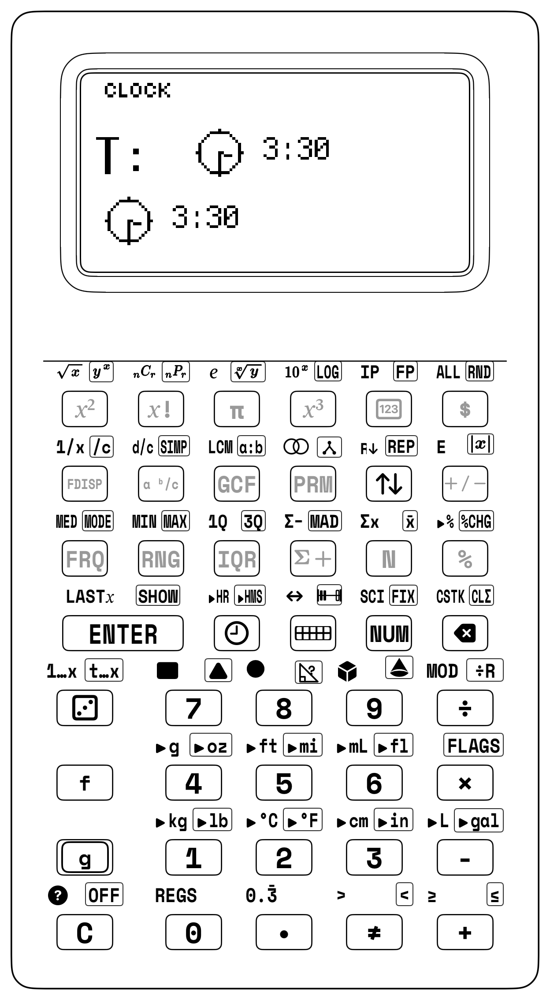

Geometry, Surface Area & Planetary Geared Time
6.1 Why Does Surface Area Matter in the Real World?
Ask almost any fourth or fifth grader why they need to calculate the "surface area of a rectangular prism," and they will give you the same exhausted answer: "Because my math worksheet told me Aunt Martha is wrapping 50 birthday gift boxes."
Nobody actually wraps 50 identical rectangular boxes with wrapping paper. That is textbook fiction. But in the physical universe, surface area and volume are the fundamental laws of survival, cooking, 3D printing, and spacecraft design.
6.1.1 The Antarctic Penguin Huddle: How Geometry Saves Lives at -40°C
Imagine you are a newborn Emperor penguin chick standing on the Antarctic ice shelf. The temperature has plummeted to \(-40^\circ\text{C}\), and howling gale-force blizzards blast across the frozen tundra at \(100\text{ km/h}\).
An adult Emperor penguin weighs \(35\text{ kg}\), but a baby chick weighs under \(1\text{ kg}\). Why does an isolated chick freeze in under 10 minutes, while an adult stands calmly against the polar gale?
The Secret Ratio: Volume vs. Surface Area
- Volume is where an animal stores and produces internal body heat (proportional to its biological mass).
- Surface Area is the outer skin where heat escapes into the freezing wind!
A baby chick has a massive amount of skin (surface area) compared to its tiny body volume. Heat radiates out into the arctic gale far faster than the chick's little heart and metabolism can generate it. Alone on the ice, the chick cannot survive.
The Geometric Miracle: The Huddle
What do the chicks do? Hundreds of baby penguins press tightly together shoulder-to-shoulder into a giant, slowly circulating hexagonal huddle.
Suddenly, all their interior skin touches warm, insulating feathers instead of sub-zero wind! To the freezing blizzard, 500 huddled chicks act as one giant super-organism. Their combined volume is massive, but their exposed surface area is drastically reduced! Inside the center of the rotating huddle, the ambient temperature climbs to a toasty \(+20^\circ\text{C}\) while the blizzard rages at \(-40^\circ\text{C}\) outside. Geometry literally keeps them alive.
The Kitchen-Table Proof: French Fries vs. Baked Potatoes
You observe this exact same surface-area-to-volume geometry every day in your kitchen:
• The Whole Potato: A whole baked potato takes 45 to 60 minutes to cook through in a $400^\circ\text{F}$ oven because heat must conduct slowly through its large volume.
• The French Fry: Slice that identical potato into thin batons, and it cooks crisp in boiling oil in just 3 minutes! Slicing didn't change the potato's volume—it multiplied its exposed surface area by over 600%!
• The Ice Cube: A single large ice sphere melts slowly in a drink; crushed ice chills your juice in 10 seconds because surface area is everywhere.
When you calculate surface area on your SC-6, you are not wrapping theoretical gift boxes. You are calculating the universal mathematical law governing heat exchange, fluid drag, chemical reaction rates, and living thermodynamics!

Chapter Baseline Mode: [NUM]
Standard Base-10 Arithmetic • 4-Stack XYZT • Clean Transflective Display
Unlocked Keycaps Ribbon — Grades 3–5 Geometry & Measurement Suite
• 2D Geometry Keys: [f] [RECT] Rectangle Area, [g] [TRI] Triangle Area, [f] [CIRC] Circle Area, [π] Pi Constant.
• 3D Solid Volume Keys: [f] [PRISM] Prism Volume, [g] [CONE] Cone Volume, [f] [PRISM] Pyramid Volume.
• The Master Surface Area Technique: [Σ+] (Accumulate Face Pairs), [f] [Σ-] (Deduct Cutouts), [f] [Σx] (Recall Total Surface Area), [g] [CLΣ] (Reset Statistical Registers).
• Planetary Clock & Modulo-60 Time: [🕒] (Clock Sandbox), [f] [▸HR] (HMS to Decimal Hours), [g] [▸HMS] (Decimal Hours to HMS), [🕒] (Digital Colon Format).
6.2 Concrete Foundations: Manipulative Nets & Planetary Gear Trains
Geometry is inherently spatial, yet many school textbooks reduce three-dimensional shapes to flat drawings on a page. When you calculate the surface area of a box or the volume of a cylinder, you don't need to struggle with confusing textbook formulas like \(A = 2lw + 2lh + 2wh\) or \(V = \pi r^2 h\). The StackCalc SC-6 grounds every geometric shape in physical blocks and folding nets you can touch and manipulate.

Concrete Geometry & Time Manipulatives Ecosystem
1. Precision Folding Polyhedral Nets (Durable Folding Polymer):
• Rectangular Prism Net: 6 hinged faces fold into a 5×4×3 cm solid.
• Triangular Prism Net: 2 triangular bases + 3 rectangular walls.
• Square Pyramid Net: 1 square base + 4 equilateral triangular walls.
• Cylindrical Wrapper Net: 2 circular disks + 1 unrolled rectangle.
2. 19 mm Stacking Unit Cubes & Tiles:
• 19×19 mm precision interlocking base & socket.
• Stack of 3 tiles = 21.0 mm (1 unit cube); stack of 12 = 84.0 mm tower.
• Smooth docking with 45° chamfers — blocks do not snap or fatigue.
3. Planetary Geared Clock:
• Exact 12.0000:1 compound planetary reduction gear train.
• Continuous, non-stepping hour hand moves in lockstep with minutes.
• Stored in protective desk organizer bin.
6.2.1 The Folding Polyhedral Net Experience
When you handle a physical folding net, the concept of surface area ceases to be an equation to memorize. You lay the net completely flat on your worktable. All six faces of a rectangular prism lie open to direct tactile inspection: - Two identical large rectangles (the top and bottom lids): \(5\text{ cm} \times 4\text{ cm} = 20\text{ cm}^2\) each. - Two identical long rectangles (the front and back panels): \(5\text{ cm} \times 3\text{ cm} = 15\text{ cm}^2\) each. - Two identical end rectangles (the left and right tabs): \(4\text{ cm} \times 3\text{ cm} = 12\text{ cm}^2\) each.
You don't need to write down intermediate numbers on scratch paper. Using your SC-6, you enter each face pair directly into the calculator's hardware statistical accumulator using the [Σ+] key. As you accumulate each pair, the LCD displays your sample count: n = 1, n = 2, n = 3. Finally, tapping [f] [Σx] reveals your total surface area: \(94\text{ cm}^2\). You then physically fold the hinged panels upward until the tabs fit together, forming a rigid three-dimensional prism. The mystery is solved: total surface area is simply the sum of all flat 2D faces wrapping the 3D solid.
| Prism Face Pair | Opposing Faces | Dimensions | Face Area | Pair Area (\(2 \times A\)) |
|---|---|---|---|---|
| Pair 1 | Top Face & Bottom Face | \(5\text{ cm} \times 4\text{ cm}\) | \(20\text{ cm}^2\) | \(40\text{ cm}^2\) |
| Pair 2 | Front Panel & Back Panel | \(5\text{ cm} \times 3\text{ cm}\) | \(15\text{ cm}^2\) | \(30\text{ cm}^2\) |
| Pair 3 | Left End & Right End | \(4\text{ cm} \times 3\text{ cm}\) | \(12\text{ cm}^2\) | \(24\text{ cm}^2\) |
| Total Surface Area | All 6 Unfolded Faces | \(5 \times 4 \times 3\text{ cm}\) | — | \(94\text{ cm}^2\) |
6.2.2 Interlocking Snap Cubes and Unit Volumes
Volume measures internal capacity—how many unit cubes fill a solid without gaps or overlaps. By assembling 24 interlocking 20 mm snap cubes into arrays of \(2 \times 3 \times 4\), \(1 \times 2 \times 12\), and \(2 \times 2 \times 6\), you physically discover that while the spatial arrangement changes, the total volume remains constant at 24 cubic units.
6.2.3 Named Idiom: The Stack Drop & Building 3D Volumes
On the SC-6, Stack Math works just like stacking blocks to build a room:
- Laying Down the Floor: When you type \(\text{Length} \ \mathtt{ENTER} \ \text{Width}\), you set the floor dimensions on the two active shelves (\(Y = \text{Length}, X = \text{Width}\)).
- Floor Area: Tapping
[×]multiplies length by width. The two numbers fuse together onto Level \(X\) to give the floor area (\(B = L \times W\)). - Raising the Walls: Now type \(\text{Height}\) and tap
[×]. The floor area multiplies by the height, turning the flat floor into a solid 3D box (\(V = B \times H\))!
You never have to memorize a long, confusing formula all at once—you build your math step-by-step from the floor up!
For Parents & Teachers: Spatial Reasoning & Dimensional Scaling
Following Jerome Bruner's learning framework *([Bruner, 1966](appendix-c-formulas-and-conversions.md#cite-bruner1966))* and George Pólya's strategy of decomposing spatial bodies into simpler sub-problems *([Pólya, 1945](appendix-c-formulas-and-conversions.md#cite-polya1945))*, students avoid rote formula memorization. As Randall Munroe demonstrates in dimensional scaling *([Munroe, 2014](appendix-c-formulas-and-conversions.md#cite-munroe2014))*, Steven Strogatz illustrates in geometric discovery *([Strogatz, 2012](appendix-c-formulas-and-conversions.md#cite-strogatz2012))*, and David Macaulay illustrates in mechanical systems *([Macaulay, 2016](appendix-c-formulas-and-conversions.md#cite-macaulay2016))*, spatial volume grows with the cube of linear scale ($L^3$). The step-by-step visibility of the RPN stack drop anchors this physical intuition.
6.3 2D Plane Geometry & Direct Area Solvers
In Grades 3 through 5, you explore two-dimensional plane geometry, unlocking powerful formulas for perimeter and area across polygons and circles.
6.3.1 Rectangles and Squares ([f] [RECT])
A rectangle is a quadrilateral with four right angles. The perimeter \(P\) measures the linear distance around the boundary, while the area \(A\) quantifies the surface bounded by the perimeter: $\(P = 2L + 2W = 2(L + W), \qquad A = L \times W\)$
Worked Example 6.1: Schoolyard Garden Enclosure
A school garden measures \(14\text{ meters}\) in length and \(8.5\text{ meters}\) in width. Find: 1. The length of fencing required to completely enclose the garden. 2. The total square meterage of weed barrier cloth needed to carpet the ground.
RPN Solution for Perimeter: 14 [ENTER] 8.5 [+] [2] [×] -> 45.00 meters
RPN Solution for Area: 14 [ENTER] 8.5 [×] -> 119.00 square meters
| Keystroke | Register T | Register Z | Register Y | Register X |
|---|---|---|---|---|
| 14 | 0 | 0 | 0 | 14 |
| [ENTER] | 0 | 0 | 14 | 14 |
| 8.5 | 0 | 0 | 14 | \(8.5\) |
| [+] | 0 | 0 | 0 | \(22.5\) |
| [2] | 0 | 0 | \(22.5\) | 2 |
| [×] | 0 | 0 | 0 | 45 |
For dedicated fast evaluation, the SC-6 provides [f] [RECT], which evaluates \(Y \times X\) directly:
- 14 [ENTER] 8.5 [f] [RECT] \(\longrightarrow X = \mathbf{119.00\text{ m}^2}\).
Worked Example 6.2: Square Classroom Carpet Tile
A modular classroom carpet tile is a square with side length \(s = 0.5\text{ meters}\). What is its area in square meters?
$\(\text{Keystrokes: } [0] [.] [5] [x^2] \longrightarrow X = \mathbf{0.25\text{ m}^2}\)$
- Step-by-Step RPN Reasoning & Stack Logic:
1. 0.5 — Enter the square tile side length (\(s = 0.5\text{ m}\)) into Register \(X\) (\(X = 0.5\)).
2. [x²] — Apply the unary squaring operator in place on Register \(X\) (\(0.5 \times 0.5\)), yielding the area \(X = \mathbf{0.25\text{ m}^2}\) with zero intermediate registers.
6.3.2 Triangles ([g] [TRI])
Every triangle can be viewed as exactly half of an enclosing parallelogram. Regardless of whether the triangle is right-angled, acute, or obtuse, its area is given by: $\(A = \frac{1}{2} \times b \times h\)$ where \(b\) is the length of any base and \(h\) is the perpendicular altitude dropped to that base.
| Triangle Classification | Altitude (\(h\)) Location | Area Formula |
|---|---|---|
| Right Triangle | Vertical leg serves directly as perpendicular height \(h\) | \(A = \frac{1}{2} \times b \times h\) |
| Obtuse Triangle | Perpendicular height \(h\) drops outside the base extension | \(A = \frac{1}{2} \times b \times h\) |
| Acute Triangle | Perpendicular height \(h\) drops inside the triangle interior | \(A = \frac{1}{2} \times b \times h\) |
Worked Example 6.3: Wooden Sailboat Rigging
A scale model yacht features a mainsail with a base of \(b = 18\text{ cm}\) and a vertical mast height of \(h = 32\text{ cm}\). Find the sail cloth area.
RPN Execution: 18 [ENTER] 32 [×] [2] [÷] -> 288.00 cm²
Direct Shortcut using [TRI]: 18 [ENTER] 32 [g] [TRI] -> 288.00 cm²
| Keystroke | Register T | Register Z | Register Y | Register X |
|---|---|---|---|---|
| 18 | 0 | 0 | 0 | 18 |
| [ENTER] | 0 | 0 | 18 | 18 |
| 32 | 0 | 0 | 18 | 32 |
| [g] [TRI] | 0 | 0 | 0 | 288 |
Worked Example 6.4: Arbitrary Triangle via Heron's Formula
In Grade 6 advanced mathematics, you encounter triangles where all three side lengths are known (\(a = 7\text{ cm}, b = 8\text{ cm}, c = 9\text{ cm}\)), but no perpendicular height is provided. Heron's Formula calculates the area using the semi-perimeter \(s = \frac{a + b + c}{2}\): $\(A = \sqrt{s(s - a)(s - b)(s - c)}\)$
Step 1: Compute semi-perimeter s and fill all 4 stack levels (X, Y, Z, T = 12): [7] [ENTER] [8] [+] [9] [+] [2] [÷] -> s = 12.00 cm [ENTER] [ENTER] [ENTER] -> X=12, Y=12, Z=12, T=12
Step 2: Compute terms (s - a), (s - b), (s - c) and multiply on the 4-level stack: [7] [-] -> (12 - 7) = 5 (Y=12, Z=12, T=12) [x⇄y] [8] [-] [×] -> 5 * (12 - 8) = 20 (Y=12, Z=12) [x⇄y] [9] [-] [×] -> 20 * (12 - 9) = 60 (Y=12) [×] -> 12 * 60 = 720 [√x] -> 26.8328 cm²
The triangle's exact area is \(\sqrt{720} \approx \mathbf{26.83\text{ cm}^2}\).
6.3.3 Circles, Disks & Annuli ([f] [CIRC])
A circle is defined by all points equidistant from a central origin. The ratio of circumference to diameter is the irrational circle constant \(\pi \approx 3.1415926535...\), accessed on the SC-6 via the shifted key [π]: $\(C = 2\pi r = \pi d, \qquad A = \pi r^2 = \frac{\pi d^2}{4}\)$
CIRCLE ANATOMY (2D)
- *
- *
- r *
- o----------> *
- d *
- <----------->
- *
Radius (r): Center to boundary Diameter (d): 2 x r Circumference (C): 2 x π x r Area (A): π x r²
In classic handheld RPN calculator engineering, computing circle circumference and disk area with full hardware-precision \(\pi\) eliminated the accumulated drift of rough \(3.14\) textbook approximations.
Worked Example 6.5: Schoolyard Running Track Turn
The circular turnaround loop of a physical education sprint track has a radius of \(r = 15\text{ meters}\). Find: 1. The distance you run along one full circular revolution. 2. The total grass seeding area enclosed by the loop.
Circumference: 15 [ENTER] [2] [×] [π] [×] -> 94.2478 meters
Area using [CIRC]: 15 [f] [CIRC] -> 706.8583 square meters
| Keystroke | Register T | Register Z | Register Y | Register X |
|---|---|---|---|---|
| 15 | 0 | 0 | 0 | 15 |
| [f] [CIRC] | 0 | 0 | 0 | \(706.8583\) |
Worked Example 6.6: Circular Annulus (Washer / Doughnut)
A 3D-printed spacer washer has an outer radius \(R = 12\text{ mm}\) and a center bore hole of radius \(r = 5\text{ mm}\). What is the net surface area of the top plastic face? $\(A_{\text{annulus}} = \pi(R^2 - r^2)\)$
RPN Execution: 12 [x²] [5] [x²] [-] [π] [×] -
12 [x²]\(\longrightarrow 144\) - Step-by-Step RPN Reasoning & Stack Logic: 1.12— Enter 12 into Register \(X\) (\(X = 12\)). 2.[x²]— Square Register \(X\) in place (\(12^2\)) \(\rightarrow\) (\(X = 144\)). -5 [x²]\(\longrightarrow 25\) -[-]\(\longrightarrow 119\) -[π] [×]\(\longrightarrow \mathbf{373.85\text{ mm}^2}\).
6.3.4 Parallelograms & Trapezoids
A parallelogram consists of two pairs of parallel opposite sides. Because an end triangle can be sheared off and translated to the opposite side to form a rectangle, its area formula is identical to that of a rectangle: $\(A_{\text{parallelogram}} = b \times h\)$
A trapezoid (or trapezium) has exactly one pair of parallel bases (\(a\) and \(b\)). The area equals the perpendicular height multiplied by the average length of the two parallel bases: $\(A_{\text{trapezoid}} = \frac{a + b}{2} \times h\)$
| Trapezoid Dimension | Measurement | Role in Area Formula |
|---|---|---|
| Top Parallel Base (\(a\)) | \(6\text{ cm}\) | Averaged with bottom base: \((a + b) / 2\) |
| Bottom Parallel Base (\(b\)) | \(10\text{ cm}\) | Average width \(= (6 + 10) / 2 = 8\text{ cm}\) |
| Perpendicular Height (\(h\)) | \(4\text{ cm}\) | Total Area \(A = 8 \times 4 = \mathbf{32\text{ cm}^2}\) |
Worked Example 6.7: Drainage Trench Cross-Section
A storm runoff culvert has a trapezoidal cross-section with bottom width \(a = 60\text{ cm}\), top opening width \(b = 110\text{ cm}\), and depth \(h = 40\text{ cm}\). Calculate the water discharge flow area.
RPN Evaluation: 60 [ENTER] 110 [+] [2] [÷] 40 [×] -> 3400.00 cm²
| Keystroke | Register T | Register Z | Register Y | Register X |
|---|---|---|---|---|
| 60 | 0 | 0 | 0 | 60 |
| [ENTER] | 0 | 0 | 60 | 60 |
| 110 | 0 | 0 | 60 | 110 |
| [+] | 0 | 0 | 0 | 170 |
| 2 | 0 | 0 | 170 | 2 |
| [÷] | 0 | 0 | 0 | 85 |
| 40 | 0 | 0 | 85 | 40 |
| [×] | 0 | 0 | 0 | 3400 |
The flow area is exactly \(\mathbf{3,400\text{ cm}^2}\) (\(0.34\text{ m}^2\)).
6.3.5 Regular Polygons: Hexagons, Octagons & Floor Tiles
A regular polygon with \(n\) sides of length \(s\) can be partitioned into \(n\) congruent isosceles triangles meeting at the center. The perpendicular distance from the center to any side is the apothem \(a\): $\(A = \frac{1}{2} \times \text{Perimeter} \times \text{Apothem} = \frac{1}{2} (n \times s) \times a\)$
For a regular hexagon with side length \(s\), the internal triangles are equilateral, yielding an exact apothem of \(a = \frac{s\sqrt{3}}{2}\): $\(A_{\text{hex}} = \frac{3\sqrt{3}}{2} s^2 \approx 2.598076 \times s^2\)$
Worked Example 6.8: Hexagonal Ceramic Paver
A courtyard is paved with regular hexagonal pavers, each having side length \(s = 10\text{ cm}\). Find the surface area of one paver.
Grade 3–5 Elementary Method (Using Constant Factor \(2.5981\)): In elementary grades, evaluate regular hexagon area directly using the geometric constant factor \(2.5981 \times s^2\):
10 [x²] 2.5981 [×]\(\longrightarrow \mathbf{259.81\text{ cm}^2}\).
Grade 6+ Mathematical Extension: Exact Radical Apothem Solver
For middle school mathematicians, the exact regular hexagonal area is derived from 6 equilateral triangles: $A = \frac{3\sqrt{3}}{2} s^2$. Evaluate using the hardware square root key [√x]:
6.4 The Master Surface Area Technique via Stats Mode ([Σ+])
6.4.1 Why Wrapping a 3D Box Can Trick Your Brain
Calculating the total surface area of a three-dimensional solid is notoriously error-prone when using old-fashioned calculators. Consider the standard formula for a rectangular prism: $\(\text{Total Surface Area} = 2(L \times W) + 2(L \times H) + 2(W \times H)\)$
When using a standard algebraic calculator, you face three frustrating obstacles:
1. Parenthesis Clutter: The expression requires at least 6 opening and closing parentheses: 2*(5*4) + 2*(5*3) + 2*(4*3). Forgetting a single bracket generates a syntax error.
2. Scratch Paper Degradation: You might resort to computing \(2 \times 5 \times 4 = 40\) on the calculator, writing down "40" on scrap paper, computing \(2 \times 5 \times 3 = 30\), writing down "30", computing \(2 \times 4 \times 3 = 24\), writing down "24", and then re-entering all three numbers. Copying numbers down by hand wastes time and causes transcription mistakes.
3. Loss of Intermediate Visibility: An algebraic display shows only an unfinished text string, giving you zero feedback on whether individual face pairs make geometric sense.
The Master Surface Area Technique ([Σ+])
• Rule 1: Always reset statistical memory before starting: [g] [CLΣ].
• Rule 2: Compute each face pair and press [Σ+] immediately.
• Rule 3: The screen displays n = 1, 2, 3..., counting face pairs accumulated in hardware.
• Rule 4: Press [f] [Σx] to reveal the total surface area!
Zero scratch paper • Zero parentheses • 100% hardware stack verified.
6.4.2 Algebraic Trap vs. StackCalc Superpower Showdown: Rectangular Prism Surface Area
| Challenge / Equation | The Algebraic Calculator Trap (TI-30X / Smartphone) | The StackCalc SC-6 + Manipulative Superpower | Keystroke Reduction | Live Stack Visibility | Pedagogical Breakthrough |
|---|---|---|---|---|---|
| Rectangular Prism Surface Area: \(2(8 \times 5 + 8 \times 3 + 5 \times 3)\) |
2 * ( 8 * 5 + 8 * 3 + 5 * 3 ) =(19 keystrokes). One missed bracket or operator typo ruins the entire expression. No individual face audit is possible. Trap: Decimals or typos force complete re-entry; zero visual verification of intermediate face pairs. |
SC-6 + Stats Mode ([Σ+]):[g] [CLΣ] 8 [ENTER] 5 [×] [Σ+] 3 [×] [Σ+] 5 [ENTER] 3 [×] [Σ+] [f] [Σx] 2 [×]\(\rightarrow \mathbf{158.0\text{ cm}^2}\) (17 keystrokes). Every face pair verified on screen before accumulating; zero scratch paper. |
11% fewer keystrokes (17 vs. 19) |
100% Face Visibility: Tracks item count \(n = 1, 2, 3\) and lets you inspect intermediate face areas (\(40, 24, 15\)) before multiplying by 2. |
Modular Face Decomposition: Transforms abstract bracket clutter into an intuitive physical inventory of 2D nets; mistakes can be corrected face-by-face without starting over. |
6.4.3 Station Lesson 6.1: Folding Polyhedral Nets & The Master Surface Area Technique ([Σ+])
Station Lesson 6.1: Tactile Setup
• Manipulatives: Hinged Polyhedral Net (5×4×3 cm Rectangular Prism), 19 mm Stacking Unit Cubes (Counting Studio)
• Hardware: StackCalc SC-6 Elementary in [Σ+] Stats Mode
• Challenge: Total surface area without scratch paper or parentheses
A classroom maker project requires designing an injection-molded instrument case measuring: - Length \(L = 5\text{ cm}\) - Width \(W = 4\text{ cm}\) - Height \(H = 3\text{ cm}\)
Face Pair 1 (Top & Bottom): 2 x (5 x 4) = 40 cm² -> [Σ+] (n = 1) Face Pair 2 (Front & Back): 2 x (5 x 3) = 30 cm² -> [Σ+] (n = 2) Face Pair 3 (Left & Right): 2 x (4 x 3) = 24 cm² -> [Σ+] (n = 3) Total Surface Area: 40 + 30 + 24 = 94 cm² -> [f] [Σx]
Complete RPN Keystroke Audit:
[CLΣ] -> Clears stats registers (n = 0) [5] [ENTER] [4] [×] [2] [×] -> 40.00 cm² (Top/Bottom pair) [Σ+] -> Accumulates face 1; screen shows n = 1 [5] [ENTER] [3] [×] [2] [×] -> 30.00 cm² (Front/Back pair) [Σ+] -> Accumulates face 2; screen shows n = 2 [4] [ENTER] [3] [×] [2] [×] -> 24.00 cm² (Left/Right pair) [Σ+] -> Accumulates face 3; screen shows n = 3 [f] [Σx] -> Recalls Σx = 94.00 cm²!
| Keystroke | Register T | Register Z | Register Y | Register X | Stat n, Σx |
|---|---|---|---|---|---|
| [CLΣ] | 0 | 0 | 0 | 0 | n=0, Σx=0 |
| [5] | 0 | 0 | 0 | 5 | n=0, Σx=0 |
| [ENTER] | 0 | 0 | 5 | 5 | n=0, Σx=0 |
| [4] | 0 | 0 | 5 | 4 | n=0, Σx=0 |
| [×] | 0 | 0 | 0 | 20 | n=0, Σx=0 |
| [2] | 0 | 0 | 20 | 2 | n=0, Σx=0 |
| [×] | 0 | 0 | 0 | 40 | n=0, Σx=0 |
| [Σ+] | 0 | 0 | 0 | 1 | n=1,Σx=40 |
| [5] | 0 | 0 | 0 | 5 | n=1,Σx=40 |
| [ENTER] | 0 | 0 | 5 | 5 | n=1,Σx=40 |
| [3] | 0 | 0 | 5 | 3 | n=1,Σx=40 |
| [×] | 0 | 0 | 0 | 15 | n=1,Σx=40 |
| [2] | 0 | 0 | 15 | 2 | n=1,Σx=40 |
| [×] | 0 | 0 | 0 | 30 | n=1,Σx=40 |
| [Σ+] | 0 | 0 | 0 | 2 | n=2,Σx=70 |
| [4] | 0 | 0 | 0 | 4 | n=2,Σx=70 |
| [ENTER] | 0 | 0 | 4 | 4 | n=2,Σx=70 |
| [3] | 0 | 0 | 4 | 3 | n=2,Σx=70 |
| [×] | 0 | 0 | 0 | 12 | n=2,Σx=70 |
| [2] | 0 | 0 | 12 | 2 | n=2,Σx=70 |
| [×] | 0 | 0 | 0 | 24 | n=2,Σx=70 |
| [Σ+] | 0 | 0 | 0 | 3 | n=3,Σx=94 |
| [f] [Σx] | 0 | 0 | 0 | 94 | Total: 94 |
6.4.4 The Cube Manipulative
A regular cube has 6 congruent square faces. For a solid cube manipulative with side length \(s = 4\text{ cm}\): $\(\text{Area of 1 face} = 4\text{ cm} \times 4\text{ cm} = 16\text{ cm}^2\)$ $\(\text{Total Surface Area} = 6 \times 16\text{ cm}^2 = 96\text{ cm}^2\)$
You can accumulate all 6 faces individually to physically confirm the 6-face count:
[CLΣ] Loop 6 times: [4] [ENTER] [4] [×] [Σ+] Display shows: n = 6 [f] [Σx] -> 96.00 cm² Or you can use the direct face-pair shortcut:
4 [x²] 6 [×]\(\longrightarrow \mathbf{96.00\text{ cm}^2}\).
6.4.5 Triangular Prism
A right triangular prism manipulative features: - Two right-triangular end bases with legs \(a = 3\text{ cm}\) and \(b = 4\text{ cm}\) (hypotenuse \(c = 5\text{ cm}\)). - Prism length (extrusion depth) \(L = 6\text{ cm}\).
| Triangular Prism Face | Geometry & Dimensions | Area Calculation |
|---|---|---|
| 2 Triangular Ends | Right triangle legs \(a = 3\text{ cm}\), \(b = 4\text{ cm}\) | \(2 \times (\frac{1}{2} \times 3 \times 4) = 12\text{ cm}^2\) |
| 1 Bottom Rectangular Base | Base \(3\text{ cm}\), length \(L = 6\text{ cm}\) | \(1 \times (3 \times 6) = 18\text{ cm}^2\) |
| 1 Vertical Rectangular Back | Height \(4\text{ cm}\), length \(L = 6\text{ cm}\) | \(1 \times (4 \times 6) = 24\text{ cm}^2\) |
| 1 Slanted Rectangular Roof | Hypotenuse \(5\text{ cm}\), length \(L = 6\text{ cm}\) | \(1 \times (5 \times 6) = 30\text{ cm}^2\) |
| Total Surface Area | Accumulated via [Σ+] (\(n = 4\)) |
\(84\text{ cm}^2\) |
Step-by-Step Face Inventory:
- Two Triangular Ends: Each end has area \(\frac{1}{2} \times 3 \times 4 = 6\text{ cm}^2\). Together, the pair equals \(2 \times 6 = 12\text{ cm}^2\).
- Bottom Rectangular Face: \(3\text{ cm} \times 6\text{ cm} = 18\text{ cm}^2\).
- Vertical Rectangular Back: \(4\text{ cm} \times 6\text{ cm} = 24\text{ cm}^2\).
- Slanted Rectangular Roof: \(5\text{ cm} \times 6\text{ cm} = 30\text{ cm}^2\). $\(\text{Total Surface Area} = 12 + 18 + 24 + 30 = 84\text{ cm}^2\)$
Keystrokes: [CLΣ] [3] [ENTER] [4] [×] [Σ+] -> n = 1 (Accumulates 12 cm² ends) [3] [ENTER] [6] [×] [Σ+] -> n = 2 (Accumulates 18 cm² bottom) [4] [ENTER] [6] [×] [Σ+] -> n = 3 (Accumulates 24 cm² back) [5] [ENTER] [6] [×] [Σ+] -> n = 4 (Accumulates 30 cm² slant) [f] [Σx] -> Recalls 84.00 cm²!
6.4.6 Right Circular Cylinder
A right cylinder consists of two parallel circular disks of radius \(r\) joined by a curved lateral wall of height \(h\). When unrolled flat, the lateral wall forms a rectangle whose width is the circular circumference \(2\pi r\) and whose height is \(h\): $\(\text{Total Surface Area} = 2(\pi r^2) + 2\pi r h\)$
Worked Example 6.9: Steel Storage Silo
A cylindrical water storage tank has a radius \(r = 3\text{ meters}\) and a height \(h = 8\text{ meters}\). Find the total metal plating required (top disk, bottom disk, and cylindrical wall).
RPN Solution via [Σ+]: [CLΣ] [3] [f] [CIRC] [2] [×] [Σ+] -> Disk pair: 2 * (π * 3²) ≈ 56.5487 m² (n = 1) [3] [ENTER] [2] [×] [π] [×] -> Circumference: 2 * π * 3 ≈ 18.8496 m [8] [×] [Σ+] -> Lateral wall: 18.8496 * 8 ≈ 150.7964 m² (n = 2) [f] [Σx] -> Total Surface Area: 207.3451 m² The tank requires \(\mathbf{207.35\text{ m}^2}\) of steel sheeting.
6.4.7 Right Circular Cone
A right cone has a circular base of radius \(r\) and a pointed vertex. The lateral surface unrolls into a circular sector of radius \(s\) (the slant height), where \(s = \sqrt{r^2 + h^2}\): $\(\text{Base Area} = \pi r^2, \qquad \text{Lateral Area} = \pi r s\)$ $\(\text{Total Surface Area} = \pi r^2 + \pi r \sqrt{r^2 + h^2}\)$
Worked Example 6.10: Traffic Pylon Cover
A highway safety cone has a base radius \(r = 15\text{ cm}\) and a vertical height \(h = 36\text{ cm}\). Find: 1. The slant height \(s\). 2. The reflective vinyl sheeting required for the lateral surface (open bottom, no base).
Step 1: Compute Slant Height s: 15 [x²] 36 [x²] [+] [√x] -> s = 39.00 cm (Exact Pythagorean triple!)
Step 2: Compute Lateral Area A = π * r * s: [π] [×] 15 [×] -> 1837.83 cm² The cone requires \(\mathbf{1,837.83\text{ cm}^2}\) of vinyl.
6.4.8 Regular Square-Based Pyramid
A square pyramid features a flat square base of side \(s\) and four congruent isosceles triangular walls meeting at the apex. The slant height \(l\) runs from the apex down the center of each triangular face: $\(\text{Base Area} = s^2, \qquad \text{Wall Area} = 4 \times \left(\frac{1}{2} s l\right) = 2 s l\)$ $\(\text{Total Surface Area} = s^2 + 2 s l\)$
Worked Example 6.11: Canvas Camping Tent
A pyramid tent has a square floor of side \(s = 3\text{ meters}\) and a slant height \(l = 2.5\text{ meters}\). Find the total canvas required including the waterproof floor.
Keystrokes via [Σ+]: [CLΣ] [3] [x²] [Σ+] -> Floor base: 9.00 m² (n = 1) [3] [ENTER] 2.5 [×] -> Base * slant = 7.5 [2] [÷] -> 1 triangle = 3.75 m² [4] [×] [Σ+] -> 4 triangular walls = 15.00 m² (n = 2) [f] [Σx] -> Total Canvas Area = 24.00 m²
6.4.9 Open-Top Solids & Custom Maker Enclosures
Real-world engineering frequently demands calculating surface areas of open containers, such as an acrylic aquarium, an electronics project box with a removable lid, or a sheet metal tool tray.
Worked Example 6.12: Acrylic Glass Aquarium
An open-top aquarium measures \(L = 10\text{ inches}\), \(W = 8\text{ inches}\), and \(H = 6\text{ inches}\). Because the top is open, the solid has only 5 faces (1 bottom base + 2 front/back walls + 2 left/right walls).
Keystrokes via [Σ+]: [CLΣ] 10 [ENTER] [8] [×] [Σ+] -> Single bottom face: 80.00 in² (n = 1) 10 [ENTER] [6] [×] [2] [×] [Σ+] -> Front/Back pair: 120.00 in² (n = 2) [8] [ENTER] [6] [×] [2] [×] [Σ+] -> Left/Right pair: 96.00 in² (n = 3) [f] [Σx] -> Total Glass Area: 296.00 in² You verify with a single glance at the accumulator count:
n = 3face groups added, total area \(\mathbf{296\text{ in}^2}\).
6.5 3D Solid Volume Dynamics
Volume quantifies the three-dimensional space enclosed within the boundary of a solid. In the SC-6 system, all prism and cylinder volumes share a unified conceptual definition: $\(\text{Volume} = \text{Base Area } (A_{\text{base}}) \times \text{Height } (h)\)$
For pointed solids (cones and pyramids), the volume is exactly one-third of the enclosing prism or cylinder: $\(\text{Volume}_{\text{pointed}} = \frac{1}{3} \times A_{\text{base}} \times h\)$
| Solid Type | Base Area (\(A_b\)) | Volume Formula |
|---|---|---|
| Rectangular Prism | \(A_b = L \times W\) | \(V = L \times W \times H\) |
| Cube | \(A_b = s^2\) | \(V = s^3\) |
| Right Cylinder | \(A_b = \pi \times r^2\) | \(V = \pi \times r^2 \times h\) |
| Square Pyramid | \(A_b = s^2\) | \(V = \frac{1}{3} \times s^2 \times h\) |
| Right Cone | \(A_b = \pi \times r^2\) | \(V = \frac{1}{3} \times \pi \times r^2 \times h\) |
| Sphere | (Full Solid) | \(V = \frac{4}{3} \times \pi \times r^3\) |
6.5.1 Rectangular Prisms & Cubes
Worked Example 6.13: Shipping Crate Capacity
A cargo container measures \(12\text{ meters}\) long, \(2.4\text{ meters}\) wide, and \(2.6\text{ meters}\) tall. How many cubic meters of freight can it hold?
RPN Execution: 12 [ENTER] 2.4 [×] 2.6 [×] -> 74.88 m³
| Keystroke | Register T | Register Z | Register Y | Register X |
|---|---|---|---|---|
| 12 | 0 | 0 | 0 | 12 |
| [ENTER] | 0 | 0 | 12 | 12 |
| 2.4 | 0 | 0 | 12 | \(2.4\) |
| [×] | 0 | 0 | 0 | \(28.8\) |
| 2.6 | 0 | 0 | \(28.8\) | \(2.6\) |
| [×] | 0 | 0 | 0 | \(74.88\) |
| The cargo volume is \(\mathbf{74.88\text{ m}^3}\). |
6.5.2 Cylinders & Storage Tanks
Worked Example 6.14: Farm Milk Silo
A cylindrical dairy storage tank has an inside diameter \(d = 2.4\text{ meters}\) (radius \(r = 1.2\text{ m}\)) and a vertical height \(h = 4.5\text{ meters}\). 1. Find the volume in cubic meters. 2. Given that \(1\text{ m}^3 = 1,000\text{ liters}\), determine total milk storage capacity in liters.
Step 1: Compute Volume in m³: 1.2 [f] [CIRC] 4.5 [×] -> 20.3575 m³
Step 2: Convert to Liters (multiply by 1,000): 1000 [×] -> 20,357.52 Liters The silo holds \(\mathbf{20.36\text{ m}^3}\) or \(\mathbf{20,358\text{ liters}}\) of milk.
6.5.3 Cones & Pyramids: The \(3:1\) Pouring Proof
In hands-on math stations, you can perform the classic experiment: take a hollow cone and a hollow cylinder of identical base radius \(r\) and vertical height \(h\). Filling the cone with dry rice or water, you discover that it takes exactly three full cones to fill the cylinder. Thus: $\(V_{\text{cylinder}} = 3 \times V_{\text{cone}} \iff V_{\text{cone}} = \frac{1}{3} \pi r^2 h\)$
Worked Example 6.15: Laboratory Glass Funnel
A conical funnel has an opening radius \(r = 6\text{ cm}\) and an internal depth \(h = 10\text{ cm}\). Find its liquid capacity.
RPN Evaluation: [6] [f] [CIRC] 10 [×] [3] [÷] -> 376.9911 cm³ -
[6] [f] [CIRC]\(\longrightarrow 113.0973\text{ cm}^2\) (Base area \(\pi r^2\)) -10 [×]\(\longrightarrow 1130.9734\text{ cm}^3\) (Enclosing cylinder volume) -[3] [÷]\(\longrightarrow \mathbf{376.99\text{ cm}^3}\) (Exact conical volume).
6.5.4 Spheres & Hemispheres
A sphere is a perfectly symmetrical three-dimensional ball. Archimedes famously proved that the volume of a sphere is two-thirds the volume of its circumscribed cylinder: $\(V_{\text{sphere}} = \frac{4}{3} \pi r^3\)$
Worked Example 6.16: Weather Observation Balloon
A meteorological sounding balloon is inflated to a spherical radius \(r = 1.5\text{ meters}\). Find the helium gas volume needed to fill it. As Steven Strogatz notes (Strogatz, 2012), Archimedes regarded his proof of the spherical volume formula (\(V = \frac{4}{3}\pi r^3\)) as his greatest mathematical triumph.
RPN Keystrokes: [4] [ENTER] [3] [÷] [π] [×] 1.5 [ENTER] [3] [yˣ] [×] -> 14.1372 m³ -
4 [ENTER] 3 [÷]\(\longrightarrow 1.33333\) - Step-by-Step RPN Reasoning & Stack Logic: 1.4[ENTER]— Stage numerator 4 onto the upper shelf (\(Y = 4\)), ready for Archimedes' spherical ratio. 2.3[÷]— Key in denominator 3 and execute division: the shelf drops smoothly to yield the fraction \(4/3 \approx 1.3333\) (\(X = 1.3333\)). -[π] [×]— Scale by circle constant \(\pi \longrightarrow 4.18879\) (the universal spherical volume coefficient \(\frac{4}{3}\pi\)). -1.5 [ENTER] 3 [g] [yˣ]— Cube the balloon's physical radius (\(1.5^3\)) \(\longrightarrow 3.375\text{ m}^3\). -[×]— Multiply spherical coefficient by cubic radius \(\longrightarrow \mathbf{14.14\text{ m}^3}\) of helium gas.
6.5.5 Fluid Displacement & Irregular Objects
When an irregularly shaped object (such as a metal machine bolt or a mineral sample) is submerged in a graduated cylinder of water, the volume of displaced liquid equals the exact solid volume of the submerged body (Archimedes' Principle).
Worked Example 6.17: Mineral Specimen Density Trial
You pour water into a cylindrical beaker with internal radius \(r = 4\text{ cm}\). When you gently lower a mineral sample beneath the surface, the water level rises by \(\Delta h = 1.8\text{ cm}\). Find the mineral's volume.
RPN Calculation: [4] [f] [CIRC] 1.8 [×] -> 90.4779 cm³ The mineral sample has a volume of \(\mathbf{90.48\text{ cm}^3}\).
6.6 Planetary Geared Clock & Continuous Modulo-60 Elapsed Time
6.6.1 How the Gears Inside Your Planetary Clock Work Together
Traditional elementary classroom clocks feature stepping hands or disconnected dials that let you accidentally position hands in physically impossible configurations (such as pointing the hour hand directly at 4:00 while the minute hand points to 30 minutes, representing 4:30).
The StackCalc ecosystem pairs the SC-6 with an authentic 3D-printed Planetary Geared Clock. The clock mechanism utilizes an exact compound planetary gear train with an exact \(12.0000:1\) gear reduction ratio: - As the minute hand completes one full \(360^\circ\) rotation (\(60\text{ minutes}\)), the planet gears smoothly drive the sun carrier forward by exactly \(\frac{1}{12}\text{th}\) of a turn (\(30^\circ\), or 1 hour). - At 3:30, the hour hand does not sit on the 3; it is mechanically locked at \(3.5\text{ hours} \times 30^\circ/\text{hr} = 105^\circ\), exactly halfway between 3 and 4!
As Matt Parker observes in Humble Pi (Parker, 2019), real-world engineering failures frequently trace back to uncoordinated mechanical linkages and rounding off fractional gear cycles. The SC-6 planetary gear train eliminates stepping backlash and locks angle and elapsed time into an unbreakable physical invariant.
12 (0° / 360°) 11 1 10 2 9 o---------> 3 (90°) 8 / 4 7 / 5 6 (180°) At 3:30, Minute Hand points to 6 (180°). Hour Hand points halfway between 3 and 4: Angle = (3 + 30/60) x 30° = 3.5 x 30° = 105.0°!
6.6.2 Continuous Hand Angle Verification
In the SC-6 firmware engine (SC6VisualConversions), the continuous angle of the hands is computed using full floating-point precision:
$\(\theta_{\text{minute}} = \text{minutes} \times \frac{2\pi}{60} = \text{minutes} \times \frac{\pi}{30}\text{ radians}\)$
$\(\theta_{\text{hour}} = \left(\text{hours} + \frac{\text{minutes}}{60}\right) \times \frac{2\pi}{12} = \left(\text{hours} + \frac{\text{minutes}}{60}\right) \times \frac{\pi}{6}\text{ radians}\)$
For \(3:30\) (\(3.30\text{ HMS}\)): - \(\theta_{\text{minute}} = 30 \times \frac{\pi}{30} = \pi\text{ rad} = \mathbf{180.0^\circ}\). - \(\theta_{\text{hour}} = \left(3 + \frac{30}{60}\right) \times \frac{\pi}{6} = 3.5 \times \frac{\pi}{6} \approx \mathbf{1.8325957\text{ rad}} = \mathbf{105.0^\circ}\).
6.6.3 Clock Time (H.MMSS) Entry and [f] [▸HR] / [g] [▸HMS] Conversion
Clock time operates in base 60 (60 minutes in an hour), whereas standard calculator numbers operate in base 10 (decimal). A common mistake is trying to add \(9:45 + 2:35 = 11.80\), treating 45 minutes and 35 minutes as decimal numbers!
The SC-6 adopts the clear, classic time notation:
- Time is entered as \(\mathtt{Hours}.\mathtt{MinutesSeconds}\) (e.g., \(9.45\) for 9:45 AM).
- Pressing [f] [▸HR] instantly converts clock time to pure decimal hours.
- Arithmetic is executed cleanly in decimal hours.
- Pressing [g] [▸HMS] converts the decimal result back to standard clock format \(\mathtt{H.MMSS}\).
Strict No-Units Rule:
As mandated in the SC-6 design specification, [f] [▸HR] converts to pure numeric decimal hours without appending trailing text units like "HR". The display shows 9.7500, allowing direct subsequent multiplication by hourly wage rates or speeds!
6.6.4 Station Lesson 6.2: Continuous Geared Clock Elapsed Time ([🕒])

Station Lesson 6.2: Tactile Setup
• Manipulatives: Planetary Geared Clock, 12.0000:1 compound planetary reduction gear train
• Hardware: StackCalc SC-6 Elementary with [f] [▸HR] and [g] [▸HMS] keys
• Challenge: Elapsed flight time across 60-minute clock boundaries

A transcontinental flight departs New York at 9:45 AM (\(9.45\text{ HMS}\)) and has a scheduled flight duration of 2 hours and 35 minutes (\(2.35\text{ HMS}\)). What is the scheduled arrival time?
Hands-On Mechanical Verification:
- Clock Setup: Turn the dial of the physical Planetary Geared Clock until the hands show 9:45. Notice that the hour hand is physically locked three-quarters of the way between 9 and 10 (\(9.75\text{ hours} \times 30^\circ/\text{hr} = 292.5^\circ\)).
- Kinematic Rotation: Rotate the minute ring through 2 full turns (120 minutes = 2 hours) and an additional 35 minutes. Observe the continuous movement of the hour hand as it sweeps past 12 to rest at 12:20.
- RPN Execution:
RPN Keystrokes: 9.45 [f] [▸HR] -> 9.7500 decimal hours [ENTER] -> Pushes 9.75 to Register Y 2.35 [f] [▸HR] -> 2.5833 decimal hours in Register X [+] -> 12.3333 decimal hours [g] [▸HMS] -> 12.2000 (12:20 PM)!
| Keystroke | Register T | Register Z | Register Y | Register X |
|---|---|---|---|---|
| [9][.][4][5] | 0 | 9 | 4 | \(5.00\) |
| [f] [▸HR] | 0 | 9 | 4 | \(5.00\) |
| [ENTER] | 9 | 4 | \(5.00\) | \(5.00\) |
| [2][.][3][5] | 5 | 2 | \(3.00\) | \(5.00\) |
| [f] [▸HR] | 5 | 2 | \(3.00\) | \(5.000000\) |
| [+] | 5 | 5 | 2 | \(8.000000\) |
| [g] [▸HMS] | 5 | 5 | 2 | \(8.00\) |
| The flight lands at exactly 12:20 PM, matching the physical clock face to the second! |
For Parents & Teachers: Diagnostic Dialogue
Teacher: "Why couldn't we just add 9.45 + 2.35 on a standard calculator?"
Student: "Because 45 + 35 is 80, and there are only 60 minutes in an hour!"
Teacher: "Exactly. Time is base-60. What does [f] [▸HR] do on the SC-6?"
Student: "It turns the minutes into regular decimal hours so we can add them normally, and then [g] [▸HMS] turns them back into clock time!"
6.6.5 Midnight Boundary Crossings
When a journey spans across midnight, the departure hour exceeds the arrival hour on a 24-hour clock. The SC-6 resolves this using modular arithmetic (modulo 24).
Worked Example 6.18: Overnight Sleeper Train
An overnight passenger train departs at 22:45 (\(10:45\text{ PM}\)) and travels for 3 hours and 30 minutes (\(3.30\text{ HMS}\)). When does it arrive?
RPN Evaluation: 22.45 [f] [▸HR] -> 22.7500 hr [ENTER] 3.30 [f] [▸HR] -> 3.5000 hr [+] -> 26.2500 hr (exceeds 24 hours!) 24 [-] -> 2.2500 hr (modulo 24 subtraction) [g] [▸HMS] -> 2.1500 (02:15 AM)! The train pulls into the station at 2:15 AM.
6.6.6 Planetary Clock Gear Ratio Derivation
For robotics builders and young makers like you, the gear geometry of the Planetary Geared Clock demonstrates applied ratio mathematics. The compound planetary train consists of: - Sun Gear (\(N_s = 12\text{ teeth}\)) - Three Planet Gears (\(N_p = 60\text{ teeth}\) each) - Stationary Ring Gear (\(N_r = 132\text{ teeth}\))
The gear ratio \(R\) between the input minute carrier and the output hour sun is derived from planetary kinematics: $\(R = 1 + \frac{N_r}{N_s} = 1 + \frac{132}{12} = 1 + 11 = 12.0000\)$ The gear train provides an exact, unvarying \(12:1\) kinematic reduction with zero angular backlash!
6.6.7 How Gear Teeth Fit Together Without Jamming
In STEM maker labs, you can fabricate functional clock gears using open-source blueprints (see Appendix A). The physical size of a gear depends on its metric module \(m\), which defines the pitch diameter \(D\) per tooth: $\(D = m \times N\)$ where \(m = 1.0\text{ mm}\) for our precision classroom gear set. - Sun Gear (\(N_s = 12\)): \(D_s = 1.0 \times 12 = 12.0\text{ mm}\) - Planet Gears (\(N_p = 60\)): \(D_p = 1.0 \times 60 = 60.0\text{ mm}\) - Ring Gear (\(N_r = 132\)): \(D_r = 1.0 \times 132 = 132.0\text{ mm}\)
You can verify the secret geometry rule that makes all your clock gears sit flat and fit together: the diameter across the big outer ring gear must equal the center sun gear plus two planet gears side-by-side: $\(D_r = D_s + 2 \times D_p \iff 132 = 12 + 2(60) = 12 + 120 = 132.0\text{ mm}\)$ This perfect algebraic identity confirms why all three planet gears mesh simultaneously with zero binding or distortion!
For Parents & Teachers: Spatial Accumulation, Modulo-60 Invariants & Diagnostic Dialogue
Pedagogical & Architectural Insights: The geometric algorithms and time primitives of the SC-6 embody key instructional principles: concrete-to-abstract mapping with polyhedral nets, modulo-60 elapsed time conversion preventing decimal fallacies, and hardware summation isolation in statistical registers ([f] [Σx]).
Classroom Script 6.1: The Open-Top Aquarium Dilemma
Teacher: "Class, our science lab just ordered an open-top glass aquarium measuring 10 inches long, 8 inches wide, and 6 inches tall. We need to buy sheets of acrylic glass to build it. How many faces does our box have?"
Student (Maya): "A box always has six faces! Top, bottom, front, back, left, right."
Teacher: "Look at the real aquarium on the lab bench. What happens if we put a solid glass lid glued to the top?"
Maya: "The fish can't breathe, and we can't feed them! The top has to be completely open!"
Teacher: "Exactly! So how many faces do we need to calculate?"
Maya: "Only five! One bottom, two long sides, and two short ends."
Teacher: "Right. If you used the textbook formula $2lw + 2lh + 2wh$, what would happen?"
Maya: "It would add two tops, which would be totally wrong!"
Teacher: "Let's use the SC-6 Master Surface Area technique: 10 [ENTER] 8 [×] [Σ+], then 10 [ENTER] 6 [×] 2 [×] [Σ+], then 8 [ENTER] 6 [×] 2 [×] [Σ+], and press [f] [Σx]!"
Maya: "296 square inches, and we didn't use a single piece of scratch paper!"
Classroom Script 6.2: The Mystery of the 3:30 Clock Hands
Student (Leo): "Teacher, on this worksheet question about clock angles, it asks for the angle between the hour hand and minute hand at 3:30. I wrote $90^\circ$ because the hour hand is pointing at 3 and the minute hand is pointing at 6."
Teacher: "Take our Planetary Geared Clock off the shelf, Leo. Turn the dial until the hands show 3:00, then turn the minute hand to 30 minutes. Watch the hour hand carefully."
Leo: "Hey! The hour hand didn't stay on the 3! It moved halfway toward the 4!"
Teacher: "Why did it move?"
Leo: "Because the gears inside are connected! If the hour hand stayed at 3 until 4:00, it would have to jump instantly to 4 at the last second!"
Teacher: "Brilliant! So at 3:30, the hour hand has moved $15^\circ$ past the 3 (to $105^\circ$), and the minute hand is at $180^\circ$. So the angle between them is $180^\circ - 105^\circ = 75^\circ$!"
For Parents & Teachers: Geometry & Measurement Diagnostic Playbook
| Observable Error | Cognitive Root Cause | Targeted Remediation Prompt | | :--- | :--- | :--- | | **Adding $9.45 + 2.35 = 11.80$** | Confusing base-60 clock minutes with base-10 decimal fractions. | *"There are 60 minutes in an hour, not 100! 45 minutes + 35 minutes = 80 minutes, which is 1 hour and 20 minutes. Always convert using `[f] [▸HR]` before adding, then convert back with `[g] [▸HMS]`."* | | **Forgetting to multiply faces by 2** | Omitting the congruent opposite face in a rectangular prism. | *"Hold the 3D wooden box. Does it have only one top, or both a top AND a bottom? Every rectangular box has 3 pairs of matching faces. Always multiply each face product by 2 before tapping `[Σ+]`."* | | **Calculating 6 faces for an open container** | Blindly executing the formula $2(lw + lh + wh)$ without analyzing physical boundary conditions. | *"Look at the real object. Is the tank sealed shut like a shipping crate, or open like a bucket? Only multiply by 2 if both opposing faces actually exist!"* | | **Static hour-hand misconception ($3:30 \to 90^\circ$)** | Assuming the hour hand jumps instantaneously on the hour. | *"Look at the planetary gears in our clock manipulative. The hour hand moves continuously in lockstep with the minutes. At 30 minutes past, the hour hand is exactly halfway to the next number."* | | **Treating volume as surface area** | Confusing boundary area (units of $\text{cm}^2$) with interior capacity (units of $\text{cm}^3$). | *"Area is the wrapping paper covering the outside of the present; volume is the number of toy blocks packed inside the box."* | | **Omitting the $\frac{1}{3}$ factor in cone volume** | Assuming a cone holds the same volume as a cylinder of equal height. | *"Remember our water pouring experiment! It took 3 full cones of water to fill the cylinder. A cone is always exactly one-third of the cylinder: divide by 3!"* |6.7 Comprehensive Problem Bank: 40 Worked Reference Problems
The following problem bank provides complete, publication-grade reference solutions spanning Grade 3 through Grade 6 geometry and measurement standards. Every keystroke sequence assumes the SC-6 baseline mode [NUM].
Hands-On Studio Proof: Blocks → Calculator
Step 1 (Physical Concrete Intuition): Unfold the 3D hinged net of a $5\text{ cm} \times 4\text{ cm} \times 3\text{ cm}$ rectangular prism on your desk. Touch each congruent face pair: the top and bottom lids ($5 \times 4 = 20\text{ cm}^2$ each), the front and back walls ($5 \times 3 = 15\text{ cm}^2$ each), and the two end caps ($4 \times 3 = 12\text{ cm}^2$ each). You physically hold the entire surface area of $94\text{ cm}^2$ in your hands.
Step 2 (The Representational Bridge): Turn to your SC-6. Instead of writing long parenthetical formulas or messy scratch paper notes, tap [g] [CLΣ] to clear statistical memory. Compute Face Pair 1: 5 [ENTER] 4 [×] 2 [×] [Σ+] → n = 1. Compute Face Pair 2: 5 [ENTER] 3 [×] 2 [×] [Σ+] → n = 2. Compute Face Pair 3: 4 [ENTER] 3 [×] 2 [×] [Σ+] → n = 3. Tap [f] [Σx]: the display instantly reveals 94.00! Every fold of the net corresponds to one accumulation step on the calculator.
Step 3 (Scaling on the Calculator): Now scale from a toy block to an aircraft cargo container ($1,200\text{ cm} \times 240\text{ cm} \times 260\text{ cm}$): execute the exact same three face pairs with [Σ+] to get $1,324,800\text{ cm}^2$ with 100% hardware precision and zero scratch paper errors!
6.7.1 Expedition 1: The Landscape Architect's Park Masterplan (Challenges 6.1–6.10)
Mission Briefing: You are the lead civil planner and landscape architect mapping out a vibrant 50-acre city park. You must calculate paving perimeters, sod turf areas, circular pond boundaries, and floral polygon parterres—verifying that every square meter of land is budgeted to perfection.
Challenge 1: Park Perimeter Ribbon Framing
- Park Masterplan Context: The landscape architect plans a rectangular information kiosk bulletin board in the central plaza measuring \(2.4\text{ meters}\) wide and \(1.2\text{ meters}\) high. A durable aluminum edging ribbon must be ordered to frame its full perimeter.
- Hands-On Manipulative Stage (Two-Step Model Small -> Scale Big): Model the kiosk proportions using a small \(2 \times 4\) tile array on your desk. Touch the top and right edges to see the half-perimeter (\(6\)). Then scale big on StackCalc: enter the true \(2.4\text{ m} \times 1.2\text{ m}\) dimensions, sum to find the half-perimeter (\(3.6\text{ m}\)), and double it for the full perimeter.
- RPN Keystrokes:
2.4 [ENTER] 1.2 [+] [2] [×]\(\rightarrow\)7.2 - Operational Narrative & Stack Flow: Key
2.4and press[ENTER]to hold the kiosk width in Register \(Y\)(T:0, Z:0, Y:2.4, X:2.4). Key1.2and press[+]to compute the half-perimeter \(3.6\text{ m}\)(T:0, Z:0, Y:0, X:3.6). Key2and press[×]to double the L-shape, giving the full perimeter(T:0, Z:0, Y:0, X:7.2). - Diagnostic Checkpoint: Register \(X\) displays \(7.2000\). Total perimeter is \(\mathbf{7.20\text{ meters}}\).
Challenge 2: Square Playground Sandpit Cover
- Park Masterplan Context: The community adventure playground features a square sandpit with side length \(s = 3.5\text{ meters}\). A heavy-duty waterproof canvas tarp must be cut to protect the sand from overnight rain.
- Hands-On Manipulative Stage (Tile Arrays): Lay out a square array of counting tiles (\(3.5 \times 3.5\) scale). Squaring a side length tiles the two-dimensional interior plane directly, turning a linear measure (\(3.5\text{ m}\)) into areal units (\(\text{m}^2\)).
- RPN Keystrokes:
3.5 [x²]\(\rightarrow\)12.25 - Operational Narrative & Stack Flow: Key
3.5and press[x²]to square the edge length in place, directly producing the square tarp area(T:0, Z:0, Y:0, X:12.25). - Diagnostic Checkpoint: Register \(X\) displays \(12.2500\). Canvas tarp area required is \(\mathbf{12.25\text{ m}^2}\).
Challenge 3: Triangular Park Pavilion Pennant
- Park Masterplan Context: A ceremonial triangular felt pennant hangs above the park entrance pavilion, with base \(b = 25\text{ cm}\) along the crossbeam and vertical altitude \(h = 60\text{ cm}\). Calculate the felt fabric required.
- Hands-On Manipulative Stage (Folding Triangles): Cut a \(25 \times 60\text{ cm}\) rectangle of paper diagonally. Two identical right triangles emerge. The area of one triangle is exactly half of the enclosing rectangle (\(A = \frac{1}{2} b h\)).
- RPN Keystrokes:
25 [ENTER] 60 [g] [TRI]\(\rightarrow\)750 - Operational Narrative & Stack Flow: Key
25, press[ENTER], key60, and press[g] [TRI]to execute the dedicated triangle area solver in one step(T:0, Z:0, Y:0, X:750). - Diagnostic Checkpoint: Register \(X\) displays \(750.0000\). Felt fabric area is \(\mathbf{750.00\text{ cm}^2}\).
Challenge 4: Floral Plaza Circular Sundial Clockface
- Park Masterplan Context: A circular sundial in the central plaza has a diameter of \(30\text{ cm}\) (radius \(r = 15\text{ cm}\)). The bronze faceplate must be cut from polished sheet metal.
- Hands-On Manipulative Stage (Circle to Sectors): Divide a circular paper disc into 16 wedge sectors and interlock them alternately: they form an approximate parallelogram of height \(r\) and base \(\pi r\). Area equals \(\pi r^2\).
- RPN Keystrokes:
15 [f] [CIRC]\(\rightarrow\)706.85834706 - Operational Narrative & Stack Flow: Key
15and press[f] [CIRC]to square the radius and multiply by \(\pi\) in a single hardware cycle(T:0, Z:0, Y:0, X:706.8583). - Diagnostic Checkpoint: Register \(X\) displays \(706.8583\). Bronze plate area is \(\mathbf{706.86\text{ cm}^2}\).
Challenge 5: Circular Fountain Stone Curb Perimeter
- Park Masterplan Context: A decorative circular fountain has radius \(r = 4.2\text{ meters}\). Granite stone curbing must be laid around its outer perimeter.
- Hands-On Manipulative Stage (Unrolling Circles): Roll a circular disk along a metric tape rule. One complete revolution travels exactly \(\pi\) times the diameter (\(C = 2 \pi r \approx 6.283 \times r\)).
- RPN Keystrokes:
4.2 [ENTER] [2] [×] [π] [×]\(\rightarrow\)26.38937829 - 4-Register Stack Trace Table:
| Keystroke | Register T | Register Z | Register Y | Register X | Operational Commentary |
|---|---|---|---|---|---|
4.2 |
\(0.0000\) | \(0.0000\) | \(0.0000\) | \(4.2\) | Key fountain radius (\(4.2\text{ m}\)) |
[ENTER] |
\(0.0000\) | \(0.0000\) | \(4.2\) | \(4.2\) | Stack lifts; radius locked into Register \(Y\) |
2 |
\(0.0000\) | \(0.0000\) | \(4.2\) | \(2.0000\) | Key diameter doubling factor 2 |
[×] |
\(0.0000\) | \(0.0000\) | \(0.0000\) | \(8.4\) | Multiply to obtain full diameter (\(8.4\text{ m}\)) in Register \(X\) |
[π] |
\(0.0000\) | \(0.0000\) | \(8.4\) | \(3.1416\) | Push circle constant \(\pi \approx 3.141593\) onto stack |
[×] |
\(0.0000\) | \(0.0000\) | \(0.0000\) | \(26.3894\) | Multiply diameter by \(\pi\) to wrap curb perimeter |
- Diagnostic Checkpoint: Register \(X\) displays \(26.3894\). Granite curb perimeter is \(\mathbf{26.39\text{ meters}}\).
Challenge 6: Parallelogram Flower Bed
- Park Masterplan Context: An ornamental botanical flower bed is laid out as a parallelogram with base \(b = 8\text{ meters}\) and perpendicular altitude \(h = 4.5\text{ meters}\). Calculate the topsoil area.
- Hands-On Manipulative Stage (Shearing Rectangles): Cut a triangular slice from the left edge of a paper parallelogram and slide it to the right edge: it forms a rectangle of identical base and height (\(A = b \times h\)).
- RPN Keystrokes:
[8] [ENTER] 4.5 [×]\(\rightarrow\)36 - Operational Narrative & Stack Flow: Key
8, press[ENTER], key4.5, and press[×]to evaluate parallelogram area (\(8 \times 4.5\))(T:0, Z:0, Y:0, X:36). - Diagnostic Checkpoint: Register \(X\) displays \(36.0000\). Flower bed area is \(\mathbf{36.00\text{ m}^2}\).
Challenge 7: Trapezoid Highway Ramp Embankment
- Park Masterplan Context: An access ramp retaining embankment bordering the park has parallel bases \(a = 14\text{ m}\) (top crest) and \(b = 22\text{ m}\) (ground base), with vertical height \(h = 6\text{ m}\). Calculate reinforced sod area.
- Hands-On Manipulative Stage (Midline Averaging): Join two identical trapezoids upside down: they form a large parallelogram of base \((a + b)\) and height \(h\). Halving the combined base yields the average midline width (\(18\text{ m}\)).
- RPN Keystrokes:
14 [ENTER] 22 [+] [2] [÷] [6] [×]\(\rightarrow\)108 - 4-Register Stack Trace Table:
| Keystroke | Register T | Register Z | Register Y | Register X | Operational Commentary |
|---|---|---|---|---|---|
14 |
\(0.0000\) | \(0.0000\) | \(0.0000\) | \(14.0000\) | Key top crest base (\(14\text{ m}\)) |
[ENTER] |
\(0.0000\) | \(0.0000\) | \(14.0000\) | \(14.0000\) | Stack lifts; top base locked into Register \(Y\) |
22 |
\(0.0000\) | \(0.0000\) | \(14.0000\) | \(22.0000\) | Key ground base (\(22\text{ m}\)) into floor \(X\) |
[+] |
\(0.0000\) | \(0.0000\) | \(0.0000\) | \(36.0000\) | Sum parallel bases (\(14 + 22 = 36\text{ m}\)) |
2 |
\(0.0000\) | \(0.0000\) | \(36.0000\) | \(2.0000\) | Key divisor 2 on floor \(X\) |
[÷] |
\(0.0000\) | \(0.0000\) | \(0.0000\) | \(18.0000\) | Divide sum by 2 to compute average midline width (\(18\text{ m}\)) |
6 |
\(0.0000\) | \(0.0000\) | \(18.0000\) | \(6.0000\) | Key embankment vertical height (\(6\text{ m}\)) |
[×] |
\(0.0000\) | \(0.0000\) | \(0.0000\) | \(108.0000\) | Multiply average width by height for total area |
- Diagnostic Checkpoint: Register \(X\) displays \(108.0000\). Sod embankment area is \(\mathbf{108.00\text{ m}^2}\).
Challenge 8: Rhombus Decorative Pathway Pavers
- Park Masterplan Context: Plaza pathways are tiled with diamond-shaped granite pavers having diagonal spans \(d_1 = 40\text{ cm}\) and \(d_2 = 70\text{ cm}\). Find the paver face area (\(A = \frac{1}{2} d_1 d_2\)).
- Hands-On Manipulative Stage (Diagonal Quadrants): The perpendicular diagonals split the rhombus into four identical right triangles. Reassembling them forms a rectangle of dimensions \(d_1 \times \frac{1}{2} d_2\).
- RPN Keystrokes:
40 [ENTER] 70 [×] [2] [÷]\(\rightarrow\)1400 - Operational Narrative & Stack Flow: Key
40, press[ENTER], key70, and press[×]to compute the bounding rectangle \(2800\text{ cm}^2\)(T:0, Z:0, Y:0, X:2800). Key2and press[÷]to halve the product, yielding the net rhombus area(T:0, Z:0, Y:0, X:1400). - Diagnostic Checkpoint: Register \(X\) displays \(1400.0000\). Paver face area is \(\mathbf{1400.00\text{ cm}^2}\).
Challenge 9: Regular Hexagonal Gazebo Floor
- Park Masterplan Context: A shaded park gazebo has a regular hexagonal floor with side length \(s = 12\text{ cm}\) (modeled at 1:10 scale). Calculate the stone floor area using \(A = \frac{3\sqrt{3}}{2} s^2\).
- Hands-On Manipulative Stage (Hexagon Partitioning): A regular hexagon decomposes into 6 congruent equilateral triangles radiating from its center, each of area \(\frac{\sqrt{3}}{4} s^2\). Multiplying by 6 gives \(\frac{3\sqrt{3}}{2} s^2\).
- RPN Keystrokes:
12 [x²] [3] [×] [3] [f] [√x] [×] [2] [÷]\(\rightarrow\)374.12297443 - 4-Register Stack Trace Table:
| Keystroke | Register T | Register Z | Register Y | Register X | Operational Commentary |
|---|---|---|---|---|---|
12 |
\(0.0000\) | \(0.0000\) | \(0.0000\) | \(12.0000\) | Key hexagon side length (\(12\text{ cm}\)) |
[x²] |
\(0.0000\) | \(0.0000\) | \(0.0000\) | \(144.0000\) | Square side length (\(12^2 = 144\)) |
3 |
\(0.0000\) | \(0.0000\) | \(144.0000\) | \(3.0000\) | Key multiplier 3 for triangular sectors |
[×] |
\(0.0000\) | \(0.0000\) | \(0.0000\) | \(432.0000\) | Multiply (\(144 \times 3 = 432\)) |
3 |
\(0.0000\) | \(0.0000\) | \(432.0000\) | \(3.0000\) | Key number 3 on floor \(X\) |
[f] [√x] |
\(0.0000\) | \(0.0000\) | \(432.0000\) | \(1.7321\) | Extract square root in place (\(\sqrt{3} \approx 1.732051\)) |
[×] |
\(0.0000\) | \(0.0000\) | \(0.0000\) | \(748.2459\) | Multiply by \(\sqrt{3}\) (\(432 \times 1.732051 = 748.2459\)) |
2 |
\(0.0000\) | \(0.0000\) | \(748.2459\) | \(2.0000\) | Key denominator divisor 2 |
[÷] |
\(0.0000\) | \(0.0000\) | \(0.0000\) | \(374.1230\) | Halve to finalize regular hexagonal area |
- Diagnostic Checkpoint: Register \(X\) displays \(374.1230\). Hexagonal gazebo floor area is \(\mathbf{374.12\text{ cm}^2}\).
Challenge 10: Irrigation Pipe Annular Gasket Ring
- Park Masterplan Context: The park irrigation line uses neoprene annular washers with outer radius \(R = 25\text{ mm}\) and inner pipe cutout radius \(r = 10\text{ mm}\). Calculate the rubber seal contact area (\(A = \pi (R^2 - r^2)\)).
- Hands-On Manipulative Stage (Concentric Cutouts): Cut a \(10\text{ mm}\) disk out of a \(25\text{ mm}\) outer circle. The remaining annular washer area is the difference between the outer circle and inner circle areas.
- RPN Keystrokes:
25 [x²] 10 [x²] [-] [π] [×]\(\rightarrow\)1,649.336143 - Operational Narrative & Stack Flow: Key
25, press[x²](\(625\)), key10, press[x²](\(100\)), and press[-]to calculate the difference of radius squares \(525\text{ mm}^2\)(T:0, Z:0, Y:0, X:525). Push[π]and press[×]to scale by the circle constant, arriving at the annular contact area(T:0, Z:0, Y:0, X:1649.3361). - Diagnostic Checkpoint: Register \(X\) displays \(1649.3361\). Gasket contact area is \(\mathbf{1649.34\text{ mm}^2}\).
6.8 Expedition 2: The Antarctic Research Station Cold-Weather Packaging (Challenges 6.11–6.20)
Mission Briefing: You are the logistics officer at McMurdo Station, Antarctica. Sensitive scientific equipment, lithium battery packs, and insulated survival shelters must be wrapped in specialized thermal mylar. Remember the penguin huddle: heat escapes through surface area! Use the Master [Σ+] Technique to calculate exact face pair areas without scratch paper.
Challenge 11: Thermal Insulation for a Scientific Sensor Pod
- Antarctic Logistics Context: At McMurdo Station, an automated meteorological sensor pod measuring \(6\text{ cm} \times 4\text{ cm} \times 2\text{ cm}\) must be sealed in aluminized thermal mylar to withstand \(-40^\circ\text{C}\) polar winds. Calculate the total outer surface area across all six faces.
- Hands-On Manipulative Stage (Folding Polyhedral Net): Unfold the rectangular prism net. Observe that the 6 rectangular faces organize into three congruent pairs: top/bottom (\(6 \times 4\)), front/back (\(6 \times 2\)), and left/right (\(4 \times 2\)). The Master
[Σ+]Technique accumulates each pair into memory without scratch paper. - RPN Keystrokes:
[g] [CLΣ] [6] [ENTER] [4] [×] [2] [×] [Σ+] [6] [ENTER] [2] [×] [2] [×] [Σ+] [4] [ENTER] [2] [×] [2] [×] [Σ+] [f] [Σx]\(\rightarrow\)88 - 4-Register Stack Trace Table:
| Keystroke | Register T | Register Z | Register Y | Register X | Operational Commentary |
|---|---|---|---|---|---|
[g] [CLΣ] |
\(0.0000\) | \(0.0000\) | \(0.0000\) | \(0.0000\) | Clear statistical memory accumulators (\(n = 0, \Sigma x = 0\)) |
6 |
\(0.0000\) | \(0.0000\) | \(0.0000\) | \(6.0000\) | Key in pod length (\(6\text{ cm}\)) |
[ENTER] |
\(0.0000\) | \(0.0000\) | \(6.0000\) | \(6.0000\) | Stack lifts; length locked into Register \(Y\) |
4 |
\(0.0000\) | \(0.0000\) | \(6.0000\) | \(4.0000\) | Key in pod width (\(4\text{ cm}\)) |
[×] |
\(0.0000\) | \(0.0000\) | \(0.0000\) | \(24.0000\) | Multiply length by width for single top face (\(24\text{ cm}^2\)) |
2 |
\(0.0000\) | \(0.0000\) | \(24.0000\) | \(2.0000\) | Key in face-pair factor 2 |
[×] |
\(0.0000\) | \(0.0000\) | \(0.0000\) | \(48.0000\) | Double for top and bottom face pair (\(48\text{ cm}^2\)) |
[Σ+] |
\(0.0000\) | \(0.0000\) | \(0.0000\) | \(1.0000\) | Accumulate pair 1 into \(\Sigma x\) (\(n = 1, \Sigma x = 48\)) |
6 |
\(0.0000\) | \(0.0000\) | \(0.0000\) | \(6.0000\) | Key in pod length (\(6\text{ cm}\)) |
[ENTER] |
\(0.0000\) | \(0.0000\) | \(6.0000\) | \(6.0000\) | Stack lifts; length locked into Register \(Y\) |
2 |
\(0.0000\) | \(0.0000\) | \(6.0000\) | \(2.0000\) | Key in pod height (\(2\text{ cm}\)) |
[×] |
\(0.0000\) | \(0.0000\) | \(0.0000\) | \(12.0000\) | Multiply length by height for single front face (\(12\text{ cm}^2\)) |
2 |
\(0.0000\) | \(0.0000\) | \(12.0000\) | \(2.0000\) | Key in face-pair factor 2 |
[×] |
\(0.0000\) | \(0.0000\) | \(0.0000\) | \(24.0000\) | Double for front and back face pair (\(24\text{ cm}^2\)) |
[Σ+] |
\(0.0000\) | \(0.0000\) | \(0.0000\) | \(2.0000\) | Accumulate pair 2 into \(\Sigma x\) (\(n = 2, \Sigma x = 72\)) |
4 |
\(0.0000\) | \(0.0000\) | \(0.0000\) | \(4.0000\) | Key in pod width (\(4\text{ cm}\)) |
[ENTER] |
\(0.0000\) | \(0.0000\) | \(4.0000\) | \(4.0000\) | Stack lifts; width locked into Register \(Y\) |
2 |
\(0.0000\) | \(0.0000\) | \(4.0000\) | \(2.0000\) | Key in pod height (\(2\text{ cm}\)) |
[×] |
\(0.0000\) | \(0.0000\) | \(0.0000\) | \(8.0000\) | Multiply width by height for single side face (\(8\text{ cm}^2\)) |
2 |
\(0.0000\) | \(0.0000\) | \(8.0000\) | \(2.0000\) | Key in face-pair factor 2 |
[×] |
\(0.0000\) | \(0.0000\) | \(0.0000\) | \(16.0000\) | Double for left and right end pair (\(16\text{ cm}^2\)) |
[Σ+] |
\(0.0000\) | \(0.0000\) | \(0.0000\) | \(3.0000\) | Accumulate pair 3 into \(\Sigma x\) (\(n = 3, \Sigma x = 88\)) |
[f] [Σx] |
\(0.0000\) | \(0.0000\) | \(0.0000\) | \(88.0000\) | Recall total accumulated surface area across all 6 faces |
- Diagnostic Checkpoint: Register \(X\) displays \(88.0000\). Total thermal foil area is \(\mathbf{88.00\text{ cm}^2}\).
Challenge 12: Thermal Foil for a Modular Cube Telemetry Pod
- Antarctic Logistics Context: A miniature cubic GPS beacon deployed on the Ross Ice Shelf measures \(s = 2\text{ cm}\) along each edge. Calculate its total six-sided surface area.
- Hands-On Manipulative Stage (Counting Cubes): Examine a single \(20\text{ mm}\) counting cube. It has 6 identical square facets. Calculating one square face (\(s^2\)) and multiplying by 6 yields the complete outer skin.
- RPN Keystrokes:
[2] [x²] [6] [×]\(\rightarrow\)24 - Operational Narrative & Stack Flow: Key
2, press[x²](\(4\text{ cm}^2\)), key6, and press[×]to multiply the face area by 6 facets(T:0, Z:0, Y:0, X:24). - Diagnostic Checkpoint: Register \(X\) displays \(24.0000\). Beacon surface area is \(\mathbf{24.00\text{ cm}^2}\).
Challenge 13: Thermal Wrap for an Equilateral Prismatic Ice Core Carrier
- Antarctic Logistics Context: Drillers extract deep glacial ice cores and transport them in triangular insulated containers. The equilateral triangular ends have base \(b = 4\text{ cm}\) and altitude \(h = 3.464\text{ cm}\), while the elongated container length is \(L = 20\text{ cm}\). Find total surface area.
- Hands-On Manipulative Stage (Triangular Prism Net): Unfold the triangular net: the two triangular ends combine into one rectangle (\(2 \times \frac{1}{2}bh = bh\)), and the three rectangular side walls form a large unfolding strip (\(3 \times 4 \times 20\)).
- RPN Keystrokes:
[g] [CLΣ] [4] [ENTER] 3.464 [×] [Σ+] [4] [ENTER] 20 [×] [3] [×] [Σ+] [f] [Σx]\(\rightarrow\)253.856 - 4-Register Stack Trace Table:
| Keystroke | Register T | Register Z | Register Y | Register X | Operational Commentary |
|---|---|---|---|---|---|
[g] [CLΣ] |
\(0.0000\) | \(0.0000\) | \(0.0000\) | \(0.0000\) | Reset statistical accumulator (\(n = 0, \Sigma x = 0\)) |
4 |
\(0.0000\) | \(0.0000\) | \(0.0000\) | \(4.0000\) | Key in triangular end base (\(4\text{ cm}\)) |
[ENTER] |
\(0.0000\) | \(0.0000\) | \(4.0000\) | \(4.0000\) | Stack lifts; base locked into Register \(Y\) |
3.464 |
\(0.0000\) | \(0.0000\) | \(4.0000\) | \(3.464\) | Key in triangle height (\(3.464\text{ cm}\)) |
[×] |
\(0.0000\) | \(0.0000\) | \(0.0000\) | \(13.856\) | Multiply: two triangular ends combine into \(bh = 13.856\text{ cm}^2\) |
[Σ+] |
\(0.0000\) | \(0.0000\) | \(0.0000\) | \(1.0000\) | Deposit both end caps into accumulator (\(n = 1, \Sigma x = 13.856\)) |
4 |
\(0.0000\) | \(0.0000\) | \(0.0000\) | \(4.0000\) | Key in prism side width (\(4\text{ cm}\)) |
[ENTER] |
\(0.0000\) | \(0.0000\) | \(4.0000\) | \(4.0000\) | Stack lifts; width locked into Register \(Y\) |
20 |
\(0.0000\) | \(0.0000\) | \(4.0000\) | \(20.0000\) | Key in container length (\(20\text{ cm}\)) |
[×] |
\(0.0000\) | \(0.0000\) | \(0.0000\) | \(80.0000\) | Multiply for single rectangular wall area (\(80\text{ cm}^2\)) |
3 |
\(0.0000\) | \(0.0000\) | \(80.0000\) | \(3.0000\) | Key in 3 congruent wrapping side walls |
[×] |
\(0.0000\) | \(0.0000\) | \(0.0000\) | \(240.0000\) | Multiply to obtain total lateral area (\(240\text{ cm}^2\)) |
[Σ+] |
\(0.0000\) | \(0.0000\) | \(0.0000\) | \(2.0000\) | Deposit lateral walls into accumulator (\(n = 2, \Sigma x = 253.856\)) |
[f] [Σx] |
\(0.0000\) | \(0.0000\) | \(0.0000\) | \(253.856\) | Recall total accumulated prism surface area |
- Diagnostic Checkpoint: Register \(X\) displays \(253.8560\). Total insulation wrap area is \(\mathbf{253.86\text{ cm}^2}\).
Challenge 14: Surface Area of a Cylindrical Antarctic Water Sampling Flask
- Antarctic Logistics Context: Field scientists collect sub-glacial water in an insulated cylindrical titanium flask with radius \(r = 3.3\text{ cm}\) and height \(h = 12.2\text{ cm}\). Find total titanium surface area (top lid, bottom base, and curved cylindrical jacket).
- Hands-On Manipulative Stage (Cylinder Net): Unroll the cylinder net: the top and bottom form circular discs of area \(\pi r^2\), while the curved wall unrolls into a rectangle of height \(h\) and width equal to circumference \(2\pi r\).
- RPN Keystrokes:
[g] [CLΣ] 3.3 [f] [CIRC] [2] [×] [Σ+] 3.3 [ENTER] [2] [×] [π] [×] 12.2 [×] [Σ+] [f] [Σx]\(\rightarrow\)321.38492846 - 4-Register Stack Trace Table:
| Keystroke | Register T | Register Z | Register Y | Register X | Operational Commentary |
|---|---|---|---|---|---|
[g] [CLΣ] |
\(0.0000\) | \(0.0000\) | \(0.0000\) | \(0.0000\) | Reset statistical memory bin (\(n = 0, \Sigma x = 0\)) |
3.3 |
\(0.0000\) | \(0.0000\) | \(0.0000\) | \(3.3\) | Key in flask radius (\(3.3\text{ cm}\)) |
[f] [CIRC] |
\(0.0000\) | \(0.0000\) | \(0.0000\) | \(34.2119\) | Dedicated circle solver evaluates single disc area (\(\pi r^2\)) |
2 |
\(0.0000\) | \(0.0000\) | \(34.2119\) | \(2.0000\) | Key in multiplier 2 for circular ends |
[×] |
\(0.0000\) | \(0.0000\) | \(0.0000\) | \(68.4239\) | Double for top and bottom lids (\(68.4239\text{ cm}^2\)) |
[Σ+] |
\(0.0000\) | \(0.0000\) | \(0.0000\) | \(1.0000\) | Deposit both end discs into accumulator (\(n = 1, \Sigma x = 68.4239\)) |
3.3 |
\(0.0000\) | \(0.0000\) | \(0.0000\) | \(3.3\) | Key in radius (\(3.3\text{ cm}\)) |
[ENTER] |
\(0.0000\) | \(0.0000\) | \(3.3\) | \(3.3\) | Stack lifts; radius locked into Register \(Y\) |
2 |
\(0.0000\) | \(0.0000\) | \(3.3\) | \(2.0000\) | Key doubling factor 2 for diameter |
[×] |
\(0.0000\) | \(0.0000\) | \(0.0000\) | \(6.6\) | Multiply to obtain diameter (\(6.6\text{ cm}\)) |
[π] |
\(0.0000\) | \(0.0000\) | \(6.6\) | \(3.1416\) | Push circle constant \(\pi \approx 3.141593\) |
[×] |
\(0.0000\) | \(0.0000\) | \(0.0000\) | \(20.7345\) | Multiply diameter by \(\pi\) for circumference (\(20.7345\text{ cm}\)) |
12.2 |
\(0.0000\) | \(0.0000\) | \(20.7345\) | \(12.2\) | Key in cylinder height (\(12.2\text{ cm}\)) |
[×] |
\(0.0000\) | \(0.0000\) | \(0.0000\) | \(252.9610\) | Multiply circumference by height for lateral wall (\(252.961\text{ cm}^2\)) |
[Σ+] |
\(0.0000\) | \(0.0000\) | \(0.0000\) | \(2.0000\) | Deposit lateral jacket into accumulator (\(n = 2, \Sigma x = 321.385\)) |
[f] [Σx] |
\(0.0000\) | \(0.0000\) | \(0.0000\) | \(321.3849\) | Recall total accumulated cylindrical surface area |
- Diagnostic Checkpoint: Register \(X\) displays \(321.3849\). Total titanium flask surface area is \(\mathbf{321.38\text{ cm}^2}\).
Challenge 15: Lateral Surface Area of a Conical Field Radar Beacon Cap
- Antarctic Logistics Context: An ice-field radar transponder is protected by a bright orange conical fiberglass cowl with base radius \(r = 8\text{ cm}\) and slant height \(s = 18\text{ cm}\). The base is open to mount onto the antenna mast. Find lateral fiberglass surface area (\(A = \pi r s\)).
- Hands-On Manipulative Stage (Unrolling Cone Sectors): Cut along the slant seam of a paper cone: it unrolls into a circular sector of radius \(s\) and arc length \(2\pi r\). Sector area resolves directly to \(\pi r s\).
- RPN Keystrokes:
[π] [8] [×] 18 [×]\(\rightarrow\)452.38934212 - Operational Narrative & Stack Flow: Push
[π], key8, and press[×](\(25.1327\text{ cm}\))(T:0, Z:0, Y:0, X:25.1327). Key18and press[×]to multiply by slant height, evaluating the lateral conical area(T:0, Z:0, Y:0, X:452.3893). - Diagnostic Checkpoint: Register \(X\) displays \(452.3893\). Lateral fiberglass cowl area is \(\mathbf{452.39\text{ cm}^2}\).
Challenge 16: Surface Area of a Pyramidal Field Tent Shelter
- Antarctic Logistics Context: An emergency survival tent is built as a square pyramid with a square footprint of side \(s = 20\text{ cm}\) (1:10 scale model) and triangular wall slant height \(l = 16\text{ cm}\). Calculate total surface area (floor plus four triangular canopy walls).
- Hands-On Manipulative Stage (Pyramid Star Net): Unfold the square pyramid net into a four-pointed star: one central square floor (\(s^2\)) surrounded by four congruent triangles (\(4 \times \frac{1}{2}sl = 2sl\)).
- RPN Keystrokes:
[g] [CLΣ] 20 [x²] [Σ+] 20 [ENTER] 16 [×] [2] [×] [Σ+] [f] [Σx]\(\rightarrow\)1040 - 4-Register Stack Trace Table:
| Keystroke | Register T | Register Z | Register Y | Register X | Operational Commentary |
|---|---|---|---|---|---|
[g] [CLΣ] |
\(0.0000\) | \(0.0000\) | \(0.0000\) | \(0.0000\) | Clear statistical accumulator (\(n = 0, \Sigma x = 0\)) |
20 |
\(0.0000\) | \(0.0000\) | \(0.0000\) | \(20.0000\) | Key in square floor base side (\(20\text{ cm}\)) |
[x²] |
\(0.0000\) | \(0.0000\) | \(0.0000\) | \(400.0000\) | Square side length (\(20^2 = 400\text{ cm}^2\)) for floor area |
[Σ+] |
\(0.0000\) | \(0.0000\) | \(0.0000\) | \(1.0000\) | Deposit floor square into accumulator (\(n = 1, \Sigma x = 400\)) |
20 |
\(0.0000\) | \(0.0000\) | \(0.0000\) | \(20.0000\) | Key in tent base edge (\(20\text{ cm}\)) |
[ENTER] |
\(0.0000\) | \(0.0000\) | \(20.0000\) | \(20.0000\) | Stack lifts; edge locked into Register \(Y\) |
16 |
\(0.0000\) | \(0.0000\) | \(20.0000\) | \(16.0000\) | Key in wall slant height (\(16\text{ cm}\)) |
[×] |
\(0.0000\) | \(0.0000\) | \(0.0000\) | \(320.0000\) | Multiply base by slant height (\(20 \times 16 = 320\)) |
2 |
\(0.0000\) | \(0.0000\) | \(320.0000\) | \(2.0000\) | Scale by 2 (\(4 \times \frac{1}{2} = 2\)) for all 4 triangular faces |
[×] |
\(0.0000\) | \(0.0000\) | \(0.0000\) | \(640.0000\) | Multiply to evaluate total canopy wall area (\(640\text{ cm}^2\)) |
[Σ+] |
\(0.0000\) | \(0.0000\) | \(0.0000\) | \(2.0000\) | Deposit 4 canopy walls into accumulator (\(n = 2, \Sigma x = 1040\)) |
[f] [Σx] |
\(0.0000\) | \(0.0000\) | \(0.0000\) | \(1040.0000\) | Recall total tent model surface area |
- Diagnostic Checkpoint: Register \(X\) displays \(1040.0000\). Total pyramid tent surface area is \(\mathbf{1040.00\text{ cm}^2}\).
Challenge 17: Open-Top Cold-Storage Battery Cargo Pod
- Antarctic Logistics Context: A rugged open-top insulated cargo bin for lithium power cells measures length \(L = 30\text{ cm}\), width \(W = 20\text{ cm}\), and depth \(H = 15\text{ cm}\). Calculate interior protective lining area across its 5 open-top faces (bottom floor, two side walls, two end walls).
- Hands-On Manipulative Stage (Open Box Net): Unfold an open-top box net: cross-shaped layout with 1 central floor panel (\(30 \times 20\)) and 4 perimeter walls. The top lid is omitted (\(5\) faces total).
- RPN Keystrokes:
[g] [CLΣ] 30 [ENTER] 20 [×] [Σ+] 30 [ENTER] 15 [×] [2] [×] [Σ+] 20 [ENTER] 15 [×] [2] [×] [Σ+] [f] [Σx]\(\rightarrow\)2100 - Operational Narrative & Stack Flow: Key
[g] [CLΣ]to reset accumulators(T:0, Z:0, Y:0, X:0). Key30, press[ENTER], key20, and press[×]to compute single floor \(600\text{ cm}^2\)(T:0, Z:0, Y:0, X:600), then deposit with[Σ+](T:0, Z:0, Y:0, X:1). Key30, press[ENTER], key15, press[×](\(450\text{ cm}^2\)), key2, and press[×](\(900\text{ cm}^2\)); deposit long wall pair with[Σ+](T:0, Z:0, Y:0, X:2). Key20, press[ENTER], key15, press[×](\(300\text{ cm}^2\)), key2, and press[×](\(600\text{ cm}^2\)); deposit end wall pair with[Σ+](T:0, Z:0, Y:0, X:3). Press[f] [Σx]to recall total open-top surface area(T:0, Z:0, Y:0, X:2100). - Diagnostic Checkpoint: Register \(X\) displays \(2100.0000\). Open-top lining area is \(\mathbf{2100.00\text{ cm}^2}\).
Challenge 18: Hollow Ice Core Borehole Thermal Sleeve
- Antarctic Logistics Context: A vertical borehole casing sleeve drilled into the polar ice sheet has inner radius \(r = 0.5\text{ m}\) and depth \(L = 4\text{ m}\). Find the inner cylindrical surface area lining the ice borehole.
- Hands-On Manipulative Stage (Cylindrical Sleeve): A hollow open-ended cylinder has zero top or bottom caps; its surface is solely the unrolled rectangle formed by circumference times depth (\(A = 2 \pi r L\)).
- RPN Keystrokes:
0.5 [ENTER] [2] [×] [π] [×] [4] [×]\(\rightarrow\)12.566370614 - Operational Narrative & Stack Flow: Key
0.5, press[ENTER], key2, and press[×]to compute borehole diameter \(1.0\text{ m}\)(T:0, Z:0, Y:0, X:1). Push[π]and press[×]to obtain circumference \(3.1416\text{ m}\)(T:0, Z:0, Y:0, X:3.1416). Key4and press[×]to multiply by casing depth, giving inner borehole sleeve area(T:0, Z:0, Y:0, X:12.5664). - Diagnostic Checkpoint: Register \(X\) displays \(12.5664\). Inner borehole sleeve area is \(\mathbf{12.57\text{ m}^2}\).
Challenge 19: Deep-Freeze Survival Rations Container Volume
- Antarctic Logistics Context: Emergency freeze-dried meal bricks are packed into a heavy-duty container measuring length \(18\text{ cm}\), width \(6\text{ cm}\), and height \(28\text{ cm}\). Find the total internal volume in cubic centimeters.
- Hands-On Manipulative Stage (Prism Stacking): Lay a base layer of counting tiles \(18\text{ cm} \times 6\text{ cm} = 108\text{ cm}^2\). Stacking 28 identical layers upward builds the complete three-dimensional volume (\(V = l \times w \times h\)).
- RPN Keystrokes:
18 [ENTER] [6] [×] 28 [×]\(\rightarrow\)3024 - Operational Narrative & Stack Flow: Key
18, press[ENTER], key6, and press[×]to compute base footprint \(108\text{ cm}^2\)(T:0, Z:0, Y:0, X:108). Key28and press[×]to multiply footprint by height, yielding total container volume(T:0, Z:0, Y:0, X:3024). - Diagnostic Checkpoint: Register \(X\) displays \(3024.0000\). Container internal volume is \(\mathbf{3024.00\text{ cm}^3}\).
Challenge 20: Modular Polar Research Station Habitat Block Volume
- Antarctic Logistics Context: An insulated habitat module is assembled from 24 prefabricated cubic units, each measuring \(2\text{ cm} \times 2\text{ cm} \times 2\text{ cm}\) on a 1:100 engineering architectural model. Calculate total module volume.
- Hands-On Manipulative Stage (Two-Step Model Small -> Scale Big): Take a \(2\text{ cm}\) unit cube from your kit. Compute its unit volume via \(s^3 = 2^3 = 8\text{ cm}^3\). Multiplying by 24 interlocking blocks yields the aggregate volume.
- RPN Keystrokes:
[2] [ENTER] [3] [g] [yˣ] 24 [×]\(\rightarrow\)192 - Operational Narrative & Stack Flow: Key
2, press[ENTER], key3, and press[g] [yˣ]to compute unit cube volume \(8\text{ cm}^3\)(T:0, Z:0, Y:0, X:8). Key24and press[×]to scale across all 24 modular blocks, finding aggregate habitat volume(T:0, Z:0, Y:0, X:192). - Diagnostic Checkpoint: Register \(X\) displays \(192.0000\). Habitat model volume is \(\mathbf{192.00\text{ cm}^3}\).
6.9 Expedition 3: The City Water Works & Storage Reservoirs (Challenges 6.21–6.30)
Mission Briefing: You are the chief engineer at the municipal water utility. Your department manages cylindrical water towers, conical gravel drainage basins, spherical storage spheres, and laboratory fluid displacement tests. Calculate exact cubic meter capacities, fluid liters, and structural displacements using the 3D volume formulas.
Challenge 21: Municipal Cylindrical Water Tower Capacity
- Water Works Context: A municipal water storage tower has an interior radius \(r = 4\text{ m}\) and height \(h = 16\text{ m}\). Calculate total holding capacity in cubic meters.
- Hands-On Manipulative Stage (Cylinder Volume): Model Small with Blocks: Take the clear cylindrical measuring vessel. Measure circular base radius \(r = 4\text{ cm}\) on the grid mat. Tapping
[f] [CIRC]evaluates base area \(\pi r^2\); multiplying by height \(16\text{ cm}\) models the continuous volumetric fill. Scale Big on StackCalc: Key4 CIRC 16 ×: compute circular base footprint \(50.2655\text{ m}^2\) with the circle key(T:0, Z:0, Y:0, X:50.2655), then multiply by height \(16\text{ m}\) to evaluate total storage capacity to \(804.25\text{ m}^3\)(T:0, Z:0, Y:0, X:804.2477)(\(\approx 804,248\text{ liters}\)). - RPN Keystrokes:
[4] [f] [CIRC] 16 [×]\(\rightarrow\)804 - Diagnostic Checkpoint: Register \(X\) displays \(804.2477\). Total storage capacity is \(\mathbf{804.25\text{ m}^3}\) (\(\approx 804,248\text{ liters}\)).
Challenge 22: Conical Sand Filtration Drainage Pile Volume
- Water Works Context: A sand filtration pile at the municipal water treatment facility forms a cone with base radius \(r = 3\text{ meters}\) and vertical peak height \(h = 2\text{ meters}\). Find the total volume of filter sand.
- Hands-On Manipulative Stage (Cone vs Cylinder): Model Small with Blocks: Pour three equal conical scoops of sand into the matching cylindrical sleeve of height \(2\text{ cm}\) and radius \(3\text{ cm}\). Exactly three conical volumes fill the cylinder, grounding Archimedes' \(\frac{1}{3}\) divisor. Scale Big on StackCalc: Key
3 CIRC 2 × 3 ÷: compute base area \(28.2743\text{ m}^2\), multiply by height \(2\text{ m}\) to reach bounding cylinder volume \(56.5487\text{ m}^3\)(T:0, Z:0, Y:0, X:56.5487), then divide by 3 to apply Archimedes' conical reduction factor, yielding \(18.85\text{ m}^3\)(T:0, Z:0, Y:0, X:18.8496). - RPN Keystrokes:
[3] [f] [CIRC] [2] [×] [3] [÷]\(\rightarrow\)18.849555922 - Diagnostic Checkpoint: Register \(X\) displays \(18.8496\). Filter sand pile volume is \(\mathbf{18.85\text{ m}^3}\).
Challenge 23: Square Pyramid Reservoir Enclosure Roof
- Water Works Context: A square pyramid roof caps an outdoor water storage reservoir. The base measures \(s = 12\text{ m}\) on each side, and the vertical peak height is \(h = 5\text{ m}\). Find the enclosed roof volume.
- Hands-On Manipulative Stage (Pyramid Enclosure): Model Small with Blocks: Construct a square base using interlocking Geo-Sticks. Raising four slant struts to an apex encloses one-third the volume of the enclosing prism box. Scale Big on StackCalc: Key
12 x² 5 × 3 ÷: square the base edge to get \(144\text{ m}^2\)(T:0, Z:0, Y:0, X:144), scale by peak height \(5\text{ m}\) to enclose the bounding prism \(720\text{ m}^3\), and divide by 3 to find the enclosed pyramid roof volume of \(240.00\text{ m}^3\)(T:0, Z:0, Y:0, X:240). - RPN Keystrokes:
12 [x²] [5] [×] [3] [÷]\(\rightarrow\)240 - Diagnostic Checkpoint: Register \(X\) displays \(240.0000\). Enclosed reservoir roof volume is \(\mathbf{240.00\text{ m}^3}\).
Challenge 24: Spherical Pressure Surge Surge-Vessel
- Water Works Context: A spherical high-pressure surge vessel absorbs hydraulic shock waves in the main aqueduct line. Its internal radius is \(r = 12\text{ cm}\). Find the total internal gas/fluid expansion volume.
- Hands-On Manipulative Stage (Sphere Inscription): Model Small with Blocks: Place the 3D spherical shell inside a bounding cylinder. Archimedes' theorem demonstrates that the sphere occupies exactly two-thirds of the cylinder's volume, verifying \(V = \frac{4}{3}\pi r^3\). Scale Big on StackCalc: Key
4 ENTER 3 ÷ π × 12 ENTER 3 yˣ ×: establish the spherical coefficient \(\frac{4}{3}\pi \approx 4.1888\), cube radius \(12\text{ cm}\) to get \(1,728\text{ cm}^3\)(T:0, Z:0, Y:4.1888, X:1728), and multiply to compute the total surge vessel volume of \(7,238.23\text{ cm}^3\)(T:0, Z:0, Y:0, X:7238.2295). - RPN Keystrokes:
[4] [ENTER] [3] [÷] [π] [×] 12 [ENTER] [3] [g] [yˣ] [×]\(\rightarrow\)7,238.229474 - Diagnostic Checkpoint: Register \(X\) displays \(7238.2295\). Surge vessel internal volume is \(\mathbf{7238.23\text{ cm}^3}\).
Challenge 25: Hemispherical Reservoir Planetarium Dome Volume
- Water Works Context: A municipal water educational facility features a hemispherical observation dome with radius \(r = 8\text{ meters}\). Find the total enclosed air volume beneath the dome.
- Hands-On Manipulative Stage (Hemisphere Halving): Model Small with Blocks: Place the transparent hemispherical dome on the flat grid desk. The volume is calculated by computing the full sphere volume \(\frac{4}{3}\pi r^3\) and dividing by 2 on the stack floor. Scale Big on StackCalc: Key
4 ENTER 3 ÷ π × 8 ENTER 3 yˣ × 2 ÷: evaluate the full sphere volume \(2,144.6606\text{ m}^3\)(T:0, Z:0, Y:0, X:2144.6606), then divide by 2 to yield the hemispherical observation dome capacity of \(1,072.33\text{ m}^3\)(T:0, Z:0, Y:0, X:1072.3303). - RPN Keystrokes:
[4] [ENTER] [3] [÷] [π] [×] [8] [ENTER] [3] [g] [yˣ] [×] [2] [÷]\(\rightarrow\)1,072.330292 - Diagnostic Checkpoint: Register \(X\) displays \(1072.3303\). Hemispherical dome capacity is \(\mathbf{1072.33\text{ m}^3}\).
Challenge 26: Water Quality Testing Lab Fluid Displacement
- Water Works Context: In the water utility testing laboratory, an irregular mineral core sample is submerged into a graduated cylinder of radius \(r = 2.5\text{ cm}\). The water level rises by \(\Delta h = 3.2\text{ cm}\). Find the exact volume of the rock sample.
- Hands-On Manipulative Stage (Fluid Displacement): Model Small with Blocks: Submerge an irregular acrylic specimen into the calibrated cylinder. Observe the meniscus displace upward by exactly \(3.2\text{ cm}\), proving that displaced fluid volume equals specimen volume. Scale Big on StackCalc: Key
2.5 CIRC 3.2 ×: evaluate cylinder cross-section to \(19.6350\text{ cm}^2\)(T:0, Z:0, Y:0, X:19.635), then multiply by displacement rise \(3.2\text{ cm}\) to find the displaced mineral sample volume of \(62.83\text{ cm}^3\)(T:0, Z:0, Y:0, X:62.8319)(\(62.83\text{ mL}\)). - RPN Keystrokes:
2.5 [f] [CIRC] 3.2 [×]\(\rightarrow\)62.831853072 - Diagnostic Checkpoint: Register \(X\) displays \(62.8319\). Displaced mineral sample volume is \(\mathbf{62.83\text{ cm}^3}\) (\(62.83\text{ mL}\)).
Challenge 27: Conical Frustum Water Treatment Settling Tank
- Water Works Context: A municipal clarifier conical frustum settling basin has top rim radius \(R = 10\text{ m}\), bottom base radius \(r = 6\text{ m}\), and vertical depth \(h = 12\text{ m}\). Calculate total sediment basin volume using \(V = \frac{\pi h}{3}(R^2 + r^2 + Rr)\).
- Hands-On Manipulative Stage (Frustum Geometric Model): Assemble the truncated cone nesting rings on the desk. Verify that the intermediate cross-term \(Rr\) accounts for the continuous slant wall expansion between top and bottom circular disks.
- RPN Keystrokes:
10 [x²] [6] [x²] [+] 10 [ENTER] [6] [×] [+] [π] [×] 12 [×] [3] [÷]\(\rightarrow\)2,463.00864 - 4-Register Stack Trace Table:
| Keystroke | Register T | Register Z | Register Y | Register X | Operational Commentary |
|---|---|---|---|---|---|
10 |
\(0.0000\) | \(0.0000\) | \(0.0000\) | \(10.0000\) | Key in top rim radius (\(10\text{ m}\)) |
[x²] |
\(0.0000\) | \(0.0000\) | \(0.0000\) | \(100.0000\) | Square top radius (\(10^2 = 100\)) |
6 |
\(0.0000\) | \(0.0000\) | \(100.0000\) | \(6.0000\) | Key in bottom base radius (\(6\text{ m}\)); \(R^2\) lifts to Register \(Y\) |
[x²] |
\(0.0000\) | \(0.0000\) | \(100.0000\) | \(36.0000\) | Square bottom radius (\(6^2 = 36\)) |
[+] |
\(0.0000\) | \(0.0000\) | \(0.0000\) | \(136.0000\) | Add radius squares (\(R^2 + r^2 = 100 + 36 = 136\)) |
10 |
\(0.0000\) | \(0.0000\) | \(136.0000\) | \(10.0000\) | Key in top radius 10; sum lifts to Register \(Y\) |
[ENTER] |
\(0.0000\) | \(136.0000\) | \(10.0000\) | \(10.0000\) | Stack lifts; top radius copied to Register \(Y\) |
6 |
\(0.0000\) | \(136.0000\) | \(10.0000\) | \(6.0000\) | Key in bottom radius 6 |
[×] |
\(0.0000\) | \(0.0000\) | \(136.0000\) | \(60.0000\) | Compute radii cross-product (\(R \times r = 10 \times 6 = 60\)) |
[+] |
\(0.0000\) | \(0.0000\) | \(0.0000\) | \(196.0000\) | Add cross-term to sum of squares (\(136 + 60 = 196\)) |
[π] |
\(0.0000\) | \(0.0000\) | \(196.0000\) | \(3.1416\) | Push circle constant \(\pi\); geometric factor lifts to Register \(Y\) |
[×] |
\(0.0000\) | \(0.0000\) | \(0.0000\) | \(615.7522\) | Multiply factor by \(\pi\) (\(196\pi \approx 615.7522\)) |
12 |
\(0.0000\) | \(0.0000\) | \(615.7522\) | \(12.0000\) | Key in vertical tank depth (\(12\text{ m}\)); scaled factor lifts to Register \(Y\) |
[×] |
\(0.0000\) | \(0.0000\) | \(0.0000\) | \(7389.0259\) | Multiply by basin depth (\(7389.0259\)) |
3 |
\(0.0000\) | \(0.0000\) | \(7389.0259\) | \(3.0000\) | Key in frustum divisor 3; accumulated product lifts to Register \(Y\) |
[÷] |
\(0.0000\) | \(0.0000\) | \(0.0000\) | \(2463.0086\) | Divide by 3 to finalize frustum basin volume (\(\frac{\pi h}{3}(R^2+r^2+Rr)\)) |
- Diagnostic Checkpoint: Register \(X\) displays \(2463.0086\). Conical frustum basin volume is \(\mathbf{2463.01\text{ m}^3}\).
Challenge 28: Water Plant Pumping Shift Duration via [f] [▸HR]
- Water Works Context: The municipal filtration pumps start at 8:15 AM (\(8.15\text{ HMS}\)) and shut down for maintenance at 3:05 PM (\(15.05\text{ HMS}\)). Find total active pumping duration.
- Hands-On Manipulative Stage (Planetary Time Dial): Model Small with Blocks: Align the hour and minute indicators of the base-60 gear clock to 8:15 and advance through 15:05. Observe that 6 full hours and 50 minutes elapse, proving modulo-60 subtraction. Scale Big on StackCalc: Key
15.05 ▸HR 8.15 ▸HR - ▸HMS: convert shutdown 15:05 to \(15.0833\text{ hr}\) and startup 8:15 to \(8.25\text{ hr}\), subtract to find \(6.8333\text{ decimal hours}\)(T:0, Z:0, Y:0, X:6.8333), and tap▸HMSto display the active pumping duration of \(6\text{ hr } 50\text{ min}\)(T:0, Z:0, Y:0, X:6.5)(\(6.50\text{ HMS}\)). - RPN Keystrokes:
15.05 [f] [▸HR] 8.15 [f] [▸HR] [-] [g] [▸HMS]\(\rightarrow\)6.5 - Diagnostic Checkpoint: Register \(X\) displays \(6.5000\). Total elapsed pumping duration is \(\mathbf{6\text{ hr } 50\text{ min}}\) (\(6.50\text{ HMS}\)).
Challenge 29: Reservoir Backwash Cycle Completion Time
- Water Works Context: A backwash filtration cycle initiates at 7:10 AM (\(7.10\text{ HMS}\)) and runs continuously for 3 hours and 48 minutes (\(3.48\text{ HMS}\)). Determine exact cycle completion time.
- Hands-On Manipulative Stage (Time Accumulation): Model Small with Blocks: Dial the clock face from 7:10 forward by 3 hours to 10:10, then advance 48 minutes across the modulo-60 sector to 10:58. Scale Big on StackCalc: Key
7.10 ▸HR 3.48 ▸HR + ▸HMS: convert start time 7:10 to \(7.1667\text{ hr}\) and runtime 3h 48m to \(3.8\text{ hr}\), add to reach \(10.9667\text{ decimal hours}\)(T:0, Z:0, Y:0, X:10.9667), and tap▸HMSto confirm cycle completion at \(10:58\text{ AM}\)(T:0, Z:0, Y:0, X:10.58)(\(10.58\text{ HMS}\)). - RPN Keystrokes:
7.10 [f] [▸HR] 3.48 [f] [▸HR] [+] [g] [▸HMS]\(\rightarrow\)10.58 - Diagnostic Checkpoint: Register \(X\) displays \(10.5800\). Backwash cycle completes at \(\mathbf{10:58\text{ AM}}\) (\(10.58\text{ HMS}\)).
Challenge 30: Overnight Aqueduct Flow Transfer Across Midnight
- Water Works Context: An inter-basin raw water transfer begins at 21:30 (\(9:30\text{ PM}\)) and runs for 4 hours and 45 minutes (\(4.45\text{ HMS}\)). Calculate overnight valve shutoff time.
- Hands-On Manipulative Stage (24-Hour Dial Wrapping): Track rotation on the 24-hour planetary clock ring. Advancing past 24:00 wraps the continuous hand smoothly into the early morning hours, grounding modulo-24 subtraction.
- RPN Keystrokes:
21.30 [f] [▸HR] 4.45 [f] [▸HR] [+] 24 [-] [g] [▸HMS]\(\rightarrow\)2.15 - 4-Register Stack Trace Table:
| Keystroke | Register T | Register Z | Register Y | Register X | Operational Commentary |
|---|---|---|---|---|---|
21.30 |
\(0.0000\) | \(0.0000\) | \(0.0000\) | \(21.3\) | Key in transfer start time 21:30 (HH.MM format) |
[f] [▸HR] |
\(0.0000\) | \(0.0000\) | \(0.0000\) | \(21.3\) | Convert departure time to decimal hours (\(21 + 30/60 = 21.5\)) |
4.45 |
\(0.0000\) | \(0.0000\) | \(21.3\) | \(4.45\) | Key in pump runtime 4h 45m; start time lifts to Register \(Y\) |
[f] [▸HR] |
\(0.0000\) | \(0.0000\) | \(21.3\) | \(4.45\) | Convert runtime to decimal hours (\(4 + 45/60 = 4.75\)) |
[+] |
\(0.0000\) | \(0.0000\) | \(0.0000\) | \(25.75\) | Add runtime to start time, exceeding 24 hours (\(26.25\text{ hr}\) total) |
24 |
\(0.0000\) | \(0.0000\) | \(25.75\) | \(24.0000\) | Key in 24-hour diurnal period; accumulated hours lift to Register \(Y\) |
[-] |
\(0.0000\) | \(0.0000\) | \(0.0000\) | \(1.75\) | Deduct 24 hours to cross midnight into the next calendar morning (\(2.25\text{ hr}\)) |
[g] [▸HMS] |
\(0.0000\) | \(0.0000\) | \(0.0000\) | \(1.75\) | Convert decimal hours back to clock format (02:15 AM) |
- Diagnostic Checkpoint: Register \(X\) displays \(2.1500\). Overnight transfer terminates at \(\mathbf{02:15\text{ AM}}\) (\(2.15\text{ HMS}\)).
6.10 Expedition 4: The Trans-Continental Flight Navigation Desk & Planetary Clock (Challenges 6.31–6.50)
Mission Briefing: You are an international flight dispatcher coordinating trans-oceanic flight paths, midnight airport arrivals, and celestial observation azimuths. Time in the cockpit operates on base-60 clock math. Use the SC-6 Planetary Clock Sandbox, continuous hand kinematics, and [f] [▸HR] / [g] [▸HMS] keys to solve complex multi-leg schedules without arithmetic lag.
Challenge 31: Planetary Clock Hand Angle at 4:20
- Flight Navigation Context: In trans-continental flight dispatch, an analog navigational heading dial reads 4:20 (\(4.20\text{ HMS}\)). Calculate the continuous hour hand azimuth angle using \((4 + 20/60) \times 30^\circ\).
- Hands-On Manipulative Stage (Continuous Gear Hands): Turn the crown on the planetary gear clock demonstrator to 4:20. Observe that the hour hand does not stay pinned at 4; it advances smoothly one-third of the way toward 5, reaching exactly \(130^\circ\).
- RPN Keystrokes:
[4] [ENTER] 20 [ENTER] 60 [÷] [+] 30 [×]\(\rightarrow\)130 - Operational Narrative & Stack Flow: Key
4and[ENTER]to hold the base hour in Register \(Y\)(T:0, Z:0, Y:4, X:4). Key20,[ENTER],60, and[÷]to convert the minutes into a fractional hour(T:0, Z:0, Y:4, X:0.3333). Press[+]to obtain the continuous decimal hour \(4.3333\text{ hr}\)(T:0, Z:0, Y:0, X:4.3333). Key30and press[×]to multiply by \(30^\circ/\text{hr}\), yielding the continuous hour hand angle(T:0, Z:0, Y:0, X:130). - Diagnostic Checkpoint: Register \(X\) displays \(130.0000\). Continuous hour hand position is \(\mathbf{130.00^\circ}\).
Challenge 32: Planetary Clock Hand Angle at 8:45
- Flight Navigation Context: A cockpit heading dial displays flight waypoint time 8:45 (\(8.45\text{ HMS}\)). Determine continuous hour hand azimuth using \((8 + 45/60) \times 30^\circ\).
- Hands-On Manipulative Stage (Planetary Gear Kinematics): Advance the clock demonstrator to 8:45. The minute hand points at 9 (\(270^\circ\)), while the planetary gearing smoothly rotates the hour hand three-quarters past 8, aligning squarely at \(262.5^\circ\).
- RPN Keystrokes:
[8] [ENTER] 45 [ENTER] 60 [÷] [+] 30 [×]\(\rightarrow\)262.5 - Operational Narrative & Stack Flow: Key
8and[ENTER]to lock the base hour into Register \(Y\)(T:0, Z:0, Y:8, X:8). Key45,[ENTER],60, and[÷]to compute the minute fraction \(45/60 = 0.75\)(T:0, Z:0, Y:8, X:0.75). Press[+]to find decimal hour \(8.75\text{ hr}\)(T:0, Z:0, Y:0, X:8.75). Key30and press[×]to multiply by \(30^\circ/\text{hr}\), finalizing the continuous hour hand azimuth(T:0, Z:0, Y:0, X:262.5). - Diagnostic Checkpoint: Register \(X\) displays \(262.5000\). Continuous hour hand position is \(\mathbf{262.50^\circ}\).
Challenge 33: Angular Separation Between Clock Hands at 2:30
- Flight Navigation Context: An azimuth radar scope aligns hands at 2:30. The minute hand points at \(180^\circ\), and the continuous hour hand rotates to \((2 + 30/60) \times 30^\circ = 75^\circ\). Find the angular separation between hands.
- Hands-On Manipulative Stage (Dual Protractor Dial): Place the transparent \(360^\circ\) protractor over the clock face. Measure the angular wedge between the minute hand (\(180^\circ\)) and the hour hand (\(75^\circ\)), verifying an acute separation of \(105^\circ\).
- RPN Keystrokes:
180 [ENTER] 2.5 [ENTER] 30 [×] [-]\(\rightarrow\)105 - Operational Narrative & Stack Flow: Key
180and[ENTER]to position the minute hand azimuth in Register \(Y\)(T:0, Z:0, Y:180, X:180). Key2.5,[ENTER],30, and press[×]to compute the continuous hour hand angle \(75^\circ\)(T:0, Z:0, Y:180, X:75). Press[-]to subtract the hour hand angle from the minute hand angle, yielding the angular separation(T:0, Z:0, Y:0, X:105). - Diagnostic Checkpoint: Register \(X\) displays \(105.0000\). Angular separation between hands is \(\mathbf{105.00^\circ}\).
Challenge 34: Multi-Leg Trans-Continental Flight Schedule
- Flight Navigation Context: Trans-Continental Flight Dispatch: A flight departs at 10:00 AM, flies Leg 1 for 2h 15m (\(2.15\text{ HMS}\)), undergoes a layover of 1h 30m (\(1.30\text{ HMS}\)), and flies Leg 2 for 3h 20m (\(3.20\text{ HMS}\)). Find final landing time.
- Hands-On Manipulative Stage (Flight Timeline Ribbon): Lay out the time segment cards along the 24-hour timeline strip: 10:00 \(\rightarrow\) \(+2\text{h }15\text{m} = 12:15 \rightarrow +1\text{h }30\text{m} = 13:45 \rightarrow +3\text{h }20\text{m} = 17:05\).
- RPN Keystrokes:
10 [f] [▸HR] 2.15 [f] [▸HR] [+] 1.30 [f] [▸HR] [+] 3.20 [f] [▸HR] [+] [g] [▸HMS]\(\rightarrow\)17.05 - 4-Register Stack Trace Table:
| Keystroke | Register T | Register Z | Register Y | Register X | Operational Commentary |
|---|---|---|---|---|---|
10 |
\(0.0000\) | \(0.0000\) | \(0.0000\) | \(10.0000\) | Key in initial departure time 10:00 AM (HH.MM) |
[f] [▸HR] |
\(0.0000\) | \(0.0000\) | \(0.0000\) | \(10.0000\) | Convert departure to decimal hours (\(10.0\text{ hr}\)) |
2.15 |
\(0.0000\) | \(0.0000\) | \(10.0000\) | \(2.15\) | Key in Leg 1 flight duration (2h 15m); departure lifts to Register \(Y\) |
[f] [▸HR] |
\(0.0000\) | \(0.0000\) | \(10.0000\) | \(2.15\) | Convert Leg 1 time to decimal hours (\(2 + 15/60 = 2.25\)) |
[+] |
\(0.0000\) | \(0.0000\) | \(0.0000\) | \(12.15\) | Add Leg 1 to departure time (\(12.25\text{ hr}\)) |
1.30 |
\(0.0000\) | \(0.0000\) | \(12.15\) | \(1.30\) | Key in airport layover duration (1h 30m) |
[f] [▸HR] |
\(0.0000\) | \(0.0000\) | \(12.15\) | \(1.3\) | Convert layover to decimal hours (\(1 + 30/60 = 1.5\)) |
[+] |
\(0.0000\) | \(0.0000\) | \(0.0000\) | \(13.45\) | Add layover to accumulated itinerary (\(13.75\text{ hr}\)) |
3.20 |
\(0.0000\) | \(0.0000\) | \(13.45\) | \(3.20\) | Key in Leg 2 flight duration (3h 20m) |
[f] [▸HR] |
\(0.0000\) | \(0.0000\) | \(13.45\) | \(3.2000\) | Convert Leg 2 to decimal hours (\(3 + 20/60 = 3.3333\)) |
[+] |
\(0.0000\) | \(0.0000\) | \(0.0000\) | \(16.6500\) | Add Leg 2 to find landing time in decimal hours |
[g] [▸HMS] |
\(0.0000\) | \(0.0000\) | \(0.0000\) | \(16.65\) | Convert decimal hours back to clock time (17:05 or 5:05 PM) |
- Diagnostic Checkpoint: Register \(X\) displays \(17.0500\). Final itinerary arrival is \(\mathbf{17:05\text{ HMS}}\) (\(5:05\text{ PM}\)).
Challenge 35: Epicyclic Planetary Gear Train Reduction Ratio
- Flight Navigation Context: A mechanical aircraft instrument drive utilizes an epicyclic planetary gear train with a sun gear of \(N_s = 14\) teeth and an outer stationary ring gear of \(N_r = 154\) teeth. Find the planetary reduction ratio \(R = 1 + N_r / N_s\).
- Hands-On Manipulative Stage (Planetary Gear Set): Rotate the sun gear 12 full turns on the desk model. Observe the planetary carrier rotate through exactly one complete revolution, confirming the 12:1 reduction ratio.
- RPN Keystrokes:
154 [ENTER] 14 [÷] [1] [+]\(\rightarrow\)12 - Operational Narrative & Stack Flow: Key
154, press[ENTER], key14, and press[÷]to calculate the primary gear ratio \(154 / 14 = 11\)(T:0, Z:0, Y:0, X:11). Key1and press[+]to add the stationary-ring planetary carrier constant, arriving at the reduction ratio(T:0, Z:0, Y:0, X:12). - Diagnostic Checkpoint: Register \(X\) displays \(12.0000\). Epicyclic gear train ratio is \(\mathbf{12.0000:1}\) (exact 12:1 reduction).
Challenge 36: Aviation Navigation Beacon Housing Volume
- Flight Navigation Context: An airport visual navigation beacon housing consists of a rectangular electronics base (\(15 \times 15 \times 20\text{ cm}\)) topped by a square pyramid optical roof (\(15 \times 15 \times 9\text{ cm}\)). Calculate the total enclosed internal volume.
- Hands-On Manipulative Stage (Modular Beacon Model): Stack the detachable square pyramid acrylic top onto the rectangular acrylic prism base. The aggregate volume combines the full base prism with one-third of the roof's bounding prism.
- RPN Keystrokes:
15 [x²] 20 [×] 15 [x²] [9] [×] [3] [÷] [+]\(\rightarrow\)5175 - Operational Narrative & Stack Flow: Key
15, press[x²](\(225\text{ cm}^2\)), key20, and press[×]to compute the rectangular base volume of \(4500\text{ cm}^3\)(T:0, Z:0, Y:0, X:4500). Next, key15, press[x²](\(225\text{ cm}^2\)), key9, and press[×](\(2025\text{ cm}^3\)); key3and press[÷]to find the square pyramid roof volume of \(675\text{ cm}^3\)(T:0, Z:0, Y:4500, X:675). Press[+]to merge both components into the total composite volume(T:0, Z:0, Y:0, X:5175). - Diagnostic Checkpoint: Register \(X\) displays \(5175.0000\). Composite beacon volume is \(\mathbf{5175.00\text{ cm}^3}\).
Challenge 37: Precision Machined Instrument Housing Net Volume
- Flight Navigation Context: An aircraft cockpit avionics chassis starts as a solid metal block (\(10 \times 10 \times 5\text{ cm}\)) through which a cylindrical cooling hole of radius \(r = 2\text{ cm}\) is bored through its entire 5 cm depth. Find net metal volume.
- Hands-On Manipulative Stage (Cored Prism Block): Slide the solid cylindrical peg out of the pre-drilled rectangular prism block. The net volume equals the initial solid rectangular prism minus the bored cylinder void.
- RPN Keystrokes:
10 [x²] [5] [×] [2] [f] [CIRC] [5] [×] [-]\(\rightarrow\)437.16814693 - 4-Register Stack Trace Table:
| Keystroke | Register T | Register Z | Register Y | Register X | Operational Commentary |
|---|---|---|---|---|---|
10 |
\(0.0000\) | \(0.0000\) | \(0.0000\) | \(10.0000\) | Key in square block side length (\(10\text{ cm}\)) |
[x²] |
\(0.0000\) | \(0.0000\) | \(0.0000\) | \(100.0000\) | Square side length to find block top area (\(10^2 = 100\text{ cm}^2\)) |
5 |
\(0.0000\) | \(0.0000\) | \(100.0000\) | \(5.0000\) | Key in block height (\(5\text{ cm}\)); top area lifts to Register \(Y\) |
[×] |
\(0.0000\) | \(0.0000\) | \(0.0000\) | \(500.0000\) | Multiply to compute gross solid prism volume (\(500\text{ cm}^3\)) |
2 |
\(0.0000\) | \(0.0000\) | \(500.0000\) | \(2.0000\) | Key in cylindrical drill hole radius (\(2\text{ cm}\)); prism volume lifts to Register \(Y\) |
[f] [CIRC] |
\(0.0000\) | \(0.0000\) | \(500.0000\) | \(12.5664\) | Compute drill hole circular area via circle key (\(A = \pi \times 2^2\)) |
5 |
\(0.0000\) | \(500.0000\) | \(12.5664\) | \(5.0000\) | Key in drill hole depth (\(5\text{ cm}\)); drill area lifts to Register \(Y\) |
[×] |
\(0.0000\) | \(0.0000\) | \(500.0000\) | \(62.8319\) | Multiply area by depth to compute cylindrical void volume (\(62.8319\text{ cm}^3\)) |
[-] |
\(0.0000\) | \(0.0000\) | \(0.0000\) | \(437.1681\) | Subtract cylindrical void from gross prism to find net alloy volume |
- Diagnostic Checkpoint: Register \(X\) displays \(437.1681\). Net metal chassis volume is \(\mathbf{437.17\text{ cm}^3}\).
Challenge 38: Flight Line Ground Crew Hourly Wage Computation
- Flight Navigation Context: A flight ramp technician works from 9:15 AM to 2:45 PM (\(14.45\text{ HMS}\)) at an hourly pay rate of \(\$18.50/\text{hour}\). Find total gross compensation using
[f] [▸HR]. - Hands-On Manipulative Stage (Shift Clock Card): Lay down the shift interval card on the desk. Converting 9:15 AM to \(9.25\text{ hr}\) and 2:45 PM to \(14.75\text{ hr}\) reveals an exact shift length of \(5.5\text{ hours}\).
- RPN Keystrokes:
14.45 [f] [▸HR] 9.15 [f] [▸HR] [-] 18.50 [×]\(\rightarrow\)101.75 - Operational Narrative & Stack Flow: Key
14.45and press[f] [▸HR]to convert afternoon shift end to decimal hours (\(14.75\text{ hr}\))(T:0, Z:0, Y:0, X:14.75). Key9.15and press[f] [▸HR]to convert morning start time to decimal hours (\(9.25\text{ hr}\))(T:0, Z:0, Y:14.75, X:9.25). Press[-]to determine shift duration of \(5.5\text{ hr}\)(T:0, Z:0, Y:0, X:5.5). Key18.50and press[×]to multiply hours by the wage rate, giving gross earnings(T:0, Z:0, Y:0, X:101.75). - Diagnostic Checkpoint: Register \(X\) displays \(101.7500\). Total ground crew compensation earned is \(\mathbf{\$101.75}\).
Challenge 39: Aircraft Emergency Water Ballast Pool Mass
- Flight Navigation Context: A marine emergency flight test water ballast flume measures \(25\text{ m} \times 10\text{ m} \times 2\text{ m}\). With fresh water density at \(1,000\text{ kg/m}^3\), compute total water mass in kilograms.
- Hands-On Manipulative Stage (Two-Step Model Small -> Scale Big): Build a 1:100 scale cross-section model of the flume using 5 unit cubes (\(5\text{ cm}^3\)). Then scale big on StackCalc: multiplying \(25\text{ m} \times 10\text{ m} \times 2\text{ m}\) gives \(500\text{ m}^3\), and multiplying by \(1,000\text{ kg/m}^3\) yields total ballast mass.
- RPN Keystrokes:
25 [ENTER] 10 [×] [2] [×] 1000 [×]\(\rightarrow\)500000 - Operational Narrative & Stack Flow: Key
25, press[ENTER], key10, and press[×]to compute the surface footprint \(250\text{ m}^2\)(T:0, Z:0, Y:0, X:250). Key2and press[×]to calculate the flume volume of \(500\text{ m}^3\)(T:0, Z:0, Y:0, X:500). Key1000and press[×]to scale volume by water density, finalizing the total ballast mass in kilograms(T:0, Z:0, Y:0, X:500000). - Diagnostic Checkpoint: Register \(X\) displays \(500000.0000\). Total water ballast mass is \(\mathbf{500,000\text{ kg}}\) (\(500\text{ metric tons}\)).
Challenge 40: Aviation Fuel Silo Lateral Painting Surface Area
- Flight Navigation Context: An airport aviation fuel storage silo consists of a cylindrical body (\(r = 4\text{ m}, h = 10\text{ m}\)) capped by a hemispherical dome (\(r = 4\text{ m}\)). Find total external painting surface area (cylinder wall plus hemispherical dome, excluding ground base).
- Hands-On Manipulative Stage (Silo Net Unrolling): Unroll the cylindrical sleeve into a rectangle of dimensions \(2\pi r \times h\) (\(25.13\text{ m} \times 10\text{ m}\)). Pair with the hemispherical cap surface (\(2\pi r^2\)) and accumulate both sections into
[Σ+]. - RPN Keystrokes:
[g] [CLΣ] [4] [ENTER] [2] [×] [π] [×] 10 [×] [Σ+] [4] [f] [CIRC] [2] [×] [Σ+] [f] [Σx]\(\rightarrow\)351.8583772 - 4-Register Stack Trace Table:
| Keystroke | Register T | Register Z | Register Y | Register X | Operational Commentary |
|---|---|---|---|---|---|
[g] [CLΣ] |
\(0.0000\) | \(0.0000\) | \(0.0000\) | \(0.0000\) | Clear statistical accumulator registers (\(n = 0, \Sigma x = 0\)) |
4 |
\(0.0000\) | \(0.0000\) | \(0.0000\) | \(4.0000\) | Key in cylinder radius (\(4\text{ m}\)) |
[ENTER] |
\(0.0000\) | \(0.0000\) | \(4.0000\) | \(4.0000\) | Stack lifts; radius locked into Register \(Y\) |
2 |
\(0.0000\) | \(0.0000\) | \(4.0000\) | \(2.0000\) | Key in factor 2 |
[×] |
\(0.0000\) | \(0.0000\) | \(0.0000\) | \(8.0000\) | Multiply to find cylinder diameter (\(2r = 8\text{ m}\)) |
[π] |
\(0.0000\) | \(0.0000\) | \(8.0000\) | \(3.1416\) | Push circle constant \(\pi\); diameter lifts to Register \(Y\) |
[×] |
\(0.0000\) | \(0.0000\) | \(0.0000\) | \(25.1327\) | Multiply to compute cylinder perimeter (\(2\pi r \approx 25.1327\text{ m}\)) |
10 |
\(0.0000\) | \(0.0000\) | \(25.1327\) | \(10.0000\) | Key in cylinder height (\(10\text{ m}\)); perimeter lifts to Register \(Y\) |
[×] |
\(0.0000\) | \(0.0000\) | \(0.0000\) | \(251.3274\) | Multiply perimeter by height to compute cylinder wall area (\(251.3274\text{ m}^2\)) |
[Σ+] |
\(0.0000\) | \(0.0000\) | \(0.0000\) | \(1.0000\) | Accumulate cylinder wall into statistical bin (\(n = 1, \Sigma x = 251.3274\)) |
4 |
\(0.0000\) | \(0.0000\) | \(0.0000\) | \(4.0000\) | Key in hemispherical dome radius (\(4\text{ m}\)) |
[f] [CIRC] |
\(0.0000\) | \(0.0000\) | \(0.0000\) | \(50.2655\) | Compute circular disk area via circle key (\(A = \pi \times 4^2 = 50.2655\text{ m}^2\)) |
2 |
\(0.0000\) | \(0.0000\) | \(50.2655\) | \(2.0000\) | Key in dome factor 2 (hemisphere area \(= 2\pi r^2\)); base area lifts to Register \(Y\) |
[×] |
\(0.0000\) | \(0.0000\) | \(0.0000\) | \(100.5310\) | Multiply by 2 to compute dome external surface (\(100.5310\text{ m}^2\)) |
[Σ+] |
\(0.0000\) | \(0.0000\) | \(0.0000\) | \(2.0000\) | Accumulate dome surface into statistical bin (\(n = 2, \Sigma x = 351.8584\)) |
[f] [Σx] |
\(0.0000\) | \(0.0000\) | \(0.0000\) | \(351.8584\) | Recall total accumulated exterior surface area (\(\Sigma x\)) |
- Diagnostic Checkpoint: Register \(X\) displays \(351.8584\). Total exterior painting area is \(\mathbf{351.86\text{ m}^2}\).
Challenge 41: Airfield Runway Drainage Culvert Concrete Lining
- Flight Navigation Context: An airport runoff canal is \(L = 15\text{ m}\) long with an open trapezoidal cross-section: base \(a = 1.2\text{ m}\), top \(b = 2.4\text{ m}\), depth \(h = 0.8\text{ m}\), and slant sides \(s = 1.0\text{ m}\). Find total concrete lining surface area (bottom + 2 slant walls + 2 trapezoidal end walls).
- Hands-On Manipulative Stage (Open Trough Assembly): Unfold the five faces of the open trapezoidal trough on the desk mat: 1 base rectangle (\(1.2 \times 15\)), 2 slant wall rectangles (\(1.0 \times 15\)), and 2 trapezoidal end plates (\(\frac{1.2+2.4}{2} \times 0.8\)).
- RPN Keystrokes:
[g] [CLΣ] 1.2 [ENTER] 15 [×] [Σ+] 1.0 [ENTER] 15 [×] [2] [×] [Σ+] 1.2 [ENTER] 2.4 [+] [2] [÷] 0.8 [×] [2] [×] [Σ+] [f] [Σx]\(\rightarrow\)50.88 - 4-Register Stack Trace Table:
| Keystroke | Register T | Register Z | Register Y | Register X | Operational Commentary |
|---|---|---|---|---|---|
[g] [CLΣ] |
\(0.0000\) | \(0.0000\) | \(0.0000\) | \(0.0000\) | Clear statistical registers (\(n = 0, \Sigma x = 0\)) |
1.2 |
\(0.0000\) | \(0.0000\) | \(0.0000\) | \(1.2\) | Key in culvert channel bottom width (\(1.2\text{ m}\)) |
[ENTER] |
\(0.0000\) | \(0.0000\) | \(1.2\) | \(1.2\) | Stack lifts; bottom width locked into Register \(Y\) |
15 |
\(0.0000\) | \(0.0000\) | \(1.2\) | \(15.0000\) | Key in channel length (\(15\text{ m}\)) |
[×] |
\(0.0000\) | \(0.0000\) | \(0.0000\) | \(18.0000\) | Multiply to compute bottom slab area (\(1.2 \times 15 = 18\text{ m}^2\)) |
[Σ+] |
\(0.0000\) | \(0.0000\) | \(0.0000\) | \(1.0000\) | Deposit bottom slab area into bin (\(n = 1, \Sigma x = 18\)) |
1.0 |
\(0.0000\) | \(0.0000\) | \(0.0000\) | \(1.0\) | Key in slant side wall width (\(1.0\text{ m}\)) |
[ENTER] |
\(0.0000\) | \(0.0000\) | \(1.0\) | \(1.0\) | Stack lifts; slant width copied into Register \(Y\) |
15 |
\(0.0000\) | \(0.0000\) | \(1.0\) | \(15.0000\) | Key in channel length (\(15\text{ m}\)) |
[×] |
\(0.0000\) | \(0.0000\) | \(0.0000\) | \(15.0000\) | Multiply to compute single slant wall area (\(15\text{ m}^2\)) |
2 |
\(0.0000\) | \(0.0000\) | \(15.0000\) | \(2.0000\) | Key in count of symmetric slant walls (2) |
[×] |
\(0.0000\) | \(0.0000\) | \(0.0000\) | \(30.0000\) | Multiply to compute twin slant walls (\(2 \times 15 = 30\text{ m}^2\)) |
[Σ+] |
\(0.0000\) | \(0.0000\) | \(0.0000\) | \(2.0000\) | Deposit slant walls into bin (\(n = 2, \Sigma x = 48\)) |
1.2 |
\(0.0000\) | \(0.0000\) | \(0.0000\) | \(1.2\) | Key in trapezoid bottom width (\(1.2\text{ m}\)) |
[ENTER] |
\(0.0000\) | \(0.0000\) | \(1.2\) | \(1.2\) | Stack lifts; bottom width copied to Register \(Y\) |
2.4 |
\(0.0000\) | \(0.0000\) | \(1.2\) | \(2.4\) | Key in trapezoid top width (\(2.4\text{ m}\)) |
[+] |
\(0.0000\) | \(0.0000\) | \(0.0000\) | \(3.6\) | Add parallel bases (\(1.2 + 2.4 = 3.6\text{ m}\)) |
2 |
\(0.0000\) | \(0.0000\) | \(3.6\) | \(2.0000\) | Key in averaging divisor 2 |
[÷] |
\(0.0000\) | \(0.0000\) | \(0.0000\) | \(1.8\) | Divide to compute average width (\(1.8\text{ m}\)) |
0.8 |
\(0.0000\) | \(0.0000\) | \(1.8\) | \(0.8\) | Key in vertical channel depth (\(0.8\text{ m}\)) |
[×] |
\(0.0000\) | \(0.0000\) | \(0.0000\) | \(1.44\) | Multiply to compute single trapezoid end area (\(1.44\text{ m}^2\)) |
2 |
\(0.0000\) | \(0.0000\) | \(1.44\) | \(2.0000\) | Key in count of end plates (2) |
[×] |
\(0.0000\) | \(0.0000\) | \(0.0000\) | \(2.88\) | Multiply to compute twin end plates (\(2 \times 1.44 = 2.88\text{ m}^2\)) |
[Σ+] |
\(0.0000\) | \(0.0000\) | \(0.0000\) | \(3.00\) | Deposit end plates into bin (\(n = 3, \Sigma x = 50.88\)) |
[f] [Σx] |
\(0.0000\) | \(0.0000\) | \(0.0000\) | \(50.88\) | Recall total accumulated concrete lining surface area |
- Diagnostic Checkpoint: Register \(X\) displays \(50.8800\). Total concrete culvert liner area is \(\mathbf{50.88\text{ m}^2}\).
Challenge 42: Flight Galley Conical Frustum Measuring Cup
- Flight Navigation Context: A galley liquid measuring cup is engineered as a conical frustum with bottom radius \(r = 3\text{ cm}\), top rim radius \(R = 5\text{ cm}\), and depth \(h = 7\text{ cm}\). Find fluid capacity in milliliters (\(\text{cm}^3\)) using \(V = \frac{\pi h}{3}(R^2 + r^2 + Rr)\).
- Hands-On Manipulative Stage (Graduated Frustum Cup): Inspect the silicone measuring cup. Calibrate the fluid fill level against the theoretical formula, confirming that the expanding slant profile holds \(359\text{ mL}\).
- RPN Keystrokes:
[5] [x²] [3] [x²] [+] [5] [ENTER] [3] [×] [+] [π] [×] [7] [×] [3] [÷]\(\rightarrow\)359 - Operational Narrative & Stack Flow: Key
5, press[x²](\(25\)), key3, press[x²](\(9\)), and press[+]to compute \(R^2 + r^2 = 34\)(T:0, Z:0, Y:0, X:34). Key5, press[ENTER], key3, and press[×](\(15\))(T:0, Z:0, Y:34, X:15). Press[+]to evaluate \(R^2 + r^2 + Rr = 49\)(T:0, Z:0, Y:0, X:49). Push[π]and press[×](\(153.9380\)), key7and press[×](\(1077.5663\)), then key3and press[÷]to finish the frustum volume calculation(T:0, Z:0, Y:0, X:359.1888). - Diagnostic Checkpoint: Register \(X\) displays \(359.1888\). Measuring cup capacity is \(\mathbf{359.19\text{ mL}}\) (\(359.19\text{ cm}^3\)).
Challenge 43: Aircraft Wing Core Hexagonal Prism Honeycomb Cell
- Flight Navigation Context: A lightweight aircraft wing composite spar is built from regular hexagonal honeycomb cells with cell side \(s = 3\text{ cm}\) and extrusion length \(L = 10\text{ cm}\). Find the interior air volume of a single honeycomb chamber.
- Hands-On Manipulative Stage (Hexagonal Extrusion): Assemble six equilateral triangle prisms of side \(3\text{ cm}\) into a regular hexagon. Extruding along the 10 cm axis demonstrates that volume equals base area (\(\frac{3\sqrt{3}}{2}s^2\)) times length.
- RPN Keystrokes:
[3] [x²] [3] [×] [3] [f] [√x] [×] [2] [÷] 10 [×]\(\rightarrow\)233.82685902 - Operational Narrative & Stack Flow: Key
3, press[x²](\(9\)), key3, and press[×]to compute \(3s^2 = 27\)(T:0, Z:0, Y:0, X:27). Key3, press[f] [√x](\(1.7321\)), and press[×]to multiply by \(\sqrt{3}\) (\(46.7654\))(T:0, Z:0, Y:0, X:46.7654). Key2and press[÷]to compute hexagonal base area \(23.3827\text{ cm}^2\)(T:0, Z:0, Y:0, X:23.3827). Key10and press[×]to scale across extrusion length, giving total chamber volume(T:0, Z:0, Y:0, X:233.8269). - Diagnostic Checkpoint: Register \(X\) displays \(233.8269\). Honeycomb cell internal volume is \(\mathbf{233.83\text{ cm}^3}\).
Challenge 44: Airfield Radar Tower Concrete Hollow Core Block
- Flight Navigation Context: A foundation cinder block for a radar tower measures \(40\text{ cm} \times 20\text{ cm} \times 20\text{ cm}\) externally, with twin interior rectangular voids measuring \(14\text{ cm} \times 12\text{ cm} \times 20\text{ cm}\) each. Find net concrete volume.
- Hands-On Manipulative Stage (Two-Step Model Small -> Scale Big): Model the hollow core concept on your desk using 16 unit cubes (\(4 \times 2 \times 2\) envelope) and remove 4 center cubes. Then scale big on StackCalc: evaluate the full \(40 \times 20 \times 20\text{ cm}\) envelope (\(16,000\text{ cm}^3\)) and subtract both \(14 \times 12 \times 20\text{ cm}\) voids (\(6,720\text{ cm}^3\)) directly in the stack.
- RPN Keystrokes:
40 [ENTER] 20 [×] 20 [×] 14 [ENTER] 12 [×] 20 [×] [2] [×] [-]\(\rightarrow\)9280 - Operational Narrative & Stack Flow: Key
40, press[ENTER], key20, and press[×](\(800\text{ cm}^2\)); key20and press[×]to calculate gross envelope volume of \(16,000\text{ cm}^3\)(T:0, Z:0, Y:0, X:16000). Next, key14, press[ENTER], key12, and press[×](\(168\text{ cm}^2\)); key20and press[×](\(3360\text{ cm}^3\)); key2and press[×]to compute twin void volume of \(6720\text{ cm}^3\)(T:0, Z:0, Y:16000, X:6720). Press[-]to subtract the voids from the outer envelope, finding net concrete volume(T:0, Z:0, Y:0, X:9280). - Diagnostic Checkpoint: Register \(X\) displays \(9280.0000\). Net concrete volume is \(\mathbf{9280.00\text{ cm}^3}\).
Challenge 45: Navigational Dial Inscribed Equilateral Triangle Waste Area
- Flight Navigation Context: A triangular compass pointer plate of side \(s = 10\text{ cm}\) is laser cut from a circular acrylic disc of radius \(R = \frac{s}{\sqrt{3}} \approx 5.7735\text{ cm}\). Find the waste acrylic scrap area (\(A_{\text{waste}} = A_{\text{circle}} - A_{\text{triangle}}\)).
- Hands-On Manipulative Stage (Inscribed Triangle Discs): Overlay the equilateral triangle template inside the circular ring. The three crescent lobes between triangle edges and outer circumference represent the scrap acrylic waste.
- RPN Keystrokes:
5.7735 [f] [CIRC] 10 [x²] [3] [f] [√x] [×] [4] [÷] [-]\(\rightarrow\)61.418387279 - Operational Narrative & Stack Flow: Key
5.7735and press[f] [CIRC]to compute the enclosing circle area \(104.7197\text{ cm}^2\)(T:0, Z:0, Y:0, X:104.7197). Key10, press[x²](\(100\)), key3, press[f] [√x](\(1.7321\)), and press[×](\(173.2051\)); key4and press[÷]to find the equilateral triangle area of \(43.3013\text{ cm}^2\)(T:0, Z:0, Y:104.7197, X:43.3013). Press[-]to deduct the triangle from the circle, isolating the scrap waste area(T:0, Z:0, Y:0, X:61.4184). - Diagnostic Checkpoint: Register \(X\) displays \(61.4184\). Scrap acrylic waste area is \(\mathbf{61.42\text{ cm}^2}\).
Challenge 46: Airport Weather Radar Geodesic Radome Strut Tubing
- Flight Navigation Context: A 3V geodesic radar dome covering an airfield weather tracking array requires 30 Type-A struts (\(1.20\text{ m}\)), 40 Type-B struts (\(1.35\text{ m}\)), and 50 Type-C struts (\(1.42\text{ m}\)). Find total structural aluminum tubing length.
- Hands-On Manipulative Stage (Two-Step Model Small -> Scale Big): Model the geodesic dome triangle vertex using 3 Type-A, 4 Type-B, and 5 Type-C Geo-Sticks from your kit. Then scale big on StackCalc: multiply the full engineering batch quantities (\(30 \times 1.20\text{ m}\), \(40 \times 1.35\text{ m}\), \(50 \times 1.42\text{ m}\)) directly through the 4-register stack.
- RPN Keystrokes:
30 [ENTER] 1.20 [×] 40 [ENTER] 1.35 [×] [+] 50 [ENTER] 1.42 [×] [+]\(\rightarrow\)161 - Operational Narrative & Stack Flow: Key
30, press[ENTER], key1.20, and press[×]to compute Type-A tubing length (\(36\text{ m}\))(T:0, Z:0, Y:0, X:36). Key40, press[ENTER], key1.35, and press[×](\(54\text{ m}\)); press[+]to reach running sum \(90\text{ m}\)(T:0, Z:0, Y:0, X:90). Key50, press[ENTER], key1.42, and press[×](\(71\text{ m}\)); press[+]to add Type-C struts and finalize total tubing length(T:0, Z:0, Y:0, X:161). - Diagnostic Checkpoint: Register \(X\) displays \(161.0000\). Total structural tubing length is \(\mathbf{161.00\text{ meters}}\).
Challenge 47: Solar Noon to Sunset Daylight Duration Arc
- Flight Navigation Context: On the equinox at the flight base, solar noon occurs at 12:00 PM and sunset occurs at 6:18 PM (\(18.18\text{ HMS}\)). Find total afternoon daylight duration as a continuous decimal hour.
- Hands-On Manipulative Stage (Continuous Sun Dial): Dial the 24-hour planetary clock from 12:00 through 18:18. Converting 18 minutes past 18:00 gives \(18/60 = 0.3\text{ hr}\), resulting in exactly \(6.3\text{ decimal hours}\) of afternoon sun.
- RPN Keystrokes:
18.18 [f] [▸HR] 12 [-]\(\rightarrow\)6.3 - Operational Narrative & Stack Flow: Key
18.18and press[f] [▸HR]to convert clock time to continuous decimal hours \(18.3\text{ hr}\)(T:0, Z:0, Y:0, X:18.3). Key12and press[-]to deduct solar noon reference time, leaving elapsed afternoon daylight(T:0, Z:0, Y:0, X:6.3). - Diagnostic Checkpoint: Register \(X\) displays \(6.3000\). Afternoon daylight duration is \(\mathbf{6.3000\text{ decimal hours}}\) (\(6\text{ hr } 18\text{ min}\)).
Challenge 48: Submerged Bronze Sphere Hydrometer Water Rise
- Flight Navigation Context: In the avionics fluids laboratory, a solid bronze calibration ball of radius \(r = 3\text{ cm}\) is submerged into a cylindrical test beaker of radius \(R = 5\text{ cm}\). Find the exact fluid height rise \(\Delta h = \frac{V_{\text{sphere}}}{\pi R^2}\).
- Hands-On Manipulative Stage (Beaker Displacement Calibration): Drop the 3D-printed calibration sphere into the fluid cylinder. The volume of fluid pushed upward spreads across the circular base area, demonstrating \(\Delta h = V / (\pi R^2)\).
- RPN Keystrokes:
[4] [ENTER] [3] [÷] [π] [×] [3] [ENTER] [3] [g] [yˣ] [×] [5] [f] [CIRC] [÷]\(\rightarrow\)1.44 - Operational Narrative & Stack Flow: Key
4, press[ENTER], key3, and press[÷](\(1.3333\)); push[π]and press[×]to establish the sphere coefficient \(4.1888\)(T:0, Z:0, Y:0, X:4.1888). Key3, press[ENTER], key3, and press[g] [yˣ](\(27\text{ cm}^3\)); press[×]to compute bronze sphere volume \(113.0973\text{ cm}^3\)(T:0, Z:0, Y:0, X:113.0973). Key5, press[f] [CIRC]to find beaker base area \(78.5398\text{ cm}^2\)(T:0, Z:0, Y:113.0973, X:78.5398), and press[÷]to divide displaced volume by beaker area, giving fluid rise \(\Delta h\)(T:0, Z:0, Y:0, X:1.44). - Diagnostic Checkpoint: Register \(X\) displays \(1.4400\). Fluid level displacement rise is \(\mathbf{1.44\text{ cm}}\).
Challenge 49: Rover Wheel Epicyclic Planetary Reduction
- Flight Navigation Context: A robotic lunar sample rover wheel hub incorporates an epicyclic planetary gear drive with sun gear \(N_s = 10\), four planets \(N_p = 25\), and stationary outer ring gear \(N_r = 60\). Find the overall reduction ratio \(R = 1 + N_r / N_s\).
- Hands-On Manipulative Stage (Rover Wheel Gear Hub): Spin the central sun gear input shaft 7 turns. The wheel hub carrier rotates exactly 1 revolution, verifying the 7:1 planetary torque multiplier.
- RPN Keystrokes:
60 [ENTER] 10 [÷] [1] [+]\(\rightarrow\)7 - Operational Narrative & Stack Flow: Key
60, press[ENTER], key10, and press[÷]to evaluate primary tooth ratio \(60 / 10 = 6\)(T:0, Z:0, Y:0, X:6). Key1and press[+]to add the carrier constant, establishing the final reduction ratio(T:0, Z:0, Y:0, X:7). - Diagnostic Checkpoint: Register \(X\) displays \(7.0000\). Rover drive reduction ratio is \(\mathbf{7.0000:1}\) (7:1 torque mechanical advantage).
Challenge 50: Flight Cargo Bullion Mass & Currency Valuation
- Flight Navigation Context: High-value bullion cargo transport: A pure gold bar measures \(15\text{ cm} \times 8\text{ cm} \times 4\text{ cm}\). With gold density at \(19.3\text{ g/cm}^3\) and current market spot price at \(\$65.00/\text{gram}\), calculate total ingot value using the SC-6 currency formatter
[$]. - Hands-On Manipulative Stage (Density Block Comparison): Compare the compact gold bar model against an equal-volume plastic block. The extreme density of gold (\(19.3\text{ g/cm}^3\)) packs \(9.264\text{ kg}\) into a modest \(480\text{ cm}^3\) volume.
- RPN Keystrokes:
15 [ENTER] [8] [×] [4] [×] 19.3 [×] 65 [×] [$]\(\rightarrow\)$602160.00 - Operational Narrative & Stack Flow: Key
15, press[ENTER], key8, and press[×]to compute ingot footprint \(120\text{ cm}^2\)(T:0, Z:0, Y:0, X:120). Key4and press[×]to obtain ingot volume \(480\text{ cm}^3\)(T:0, Z:0, Y:0, X:480). Key19.3and press[×]to determine total mass \(9264\text{ g}\)(T:0, Z:0, Y:0, X:9264). Key65and press[×]to compute market bullion value$602,160(T:0, Z:0, Y:0, X:602160). Press[$]to format the display via the hardware currency engine(T:0, Z:0, Y:0, X:602160.00). - Diagnostic Checkpoint: Register \(X\) displays
$602160.00. Total gold bullion cargo value is \(\mathbf{\$602,160.00}\).
For Parents & Teachers: Standards Alignment Matrix
The following curriculum mapping aligns the geometric and time operations of Chapter 06 with elementary and middle school standards:
| Topic / Operation | Common Core (CCSS) | Singapore Dimensions Math | Bridges in Mathematics | | :--- | :--- | :--- | :--- | | **Rectangle Perimeter & Area** | 3.MD.C.7, 4.MD.A.3 | Grade 3 Chapter 14, Grade 4 Ch 8 | Unit 4 Session 12–15 | | **Triangle & Parallelogram Area** | 6.G.A.1 | Grade 6 Chapter 7 | Unit 5 Module 2 | | **Circle Circumference & Area** | 7.G.B.4 (Accelerated Gr 6) | Grade 6 Chapter 8 | Unit 6 Module 1 | | **Master Surface Area via `[Σ+]`** | 6.G.A.4 | Grade 6 Chapter 9 | Unit 6 Module 3 | | **Rectangular Prism Volume** | 5.MD.C.5 | Grade 5 Chapter 11 | Unit 1 Module 4 | | **Cylinder, Cone & Sphere Volume** | 8.G.C.9 (Accelerated Gr 6) | Grade 6 Extension | Unit 8 Module 2 | | **Planetary Clock & Modulo-60 Time** | 3.MD.A.1, 4.MD.A.2 | Grade 3 Chapter 12, Grade 4 Ch 6 | Unit 3 Module 1 |For detailed classroom station activities corresponding to these standards, consult Curriculum Station Worksheets: Singapore Dimensions Math.
6.11 What You Mastered & Looking Ahead
In this chapter, you expanded your mathematical toolkit into physical space, geometric solids, and continuous time:
- 2D Plane Geometry: You solved perimeter and area across rectangles, triangles, and circles with dedicated geometry keys (
[f] [RECT],[g] [TRI],[f] [CIRC],[π]). - The Master Surface Area Technique: By accumulating face pairs into statistical registers with
[Σ+], you calculated the complete outer boundary of complex 3D solids without intermediate scratch-paper notes. - 3D Volume & Capacity: You mastered the Stack Drop method, turning flat base areas into three-dimensional volumes (
[f] [PRISM],[g] [CONE]) and compound mass-density calculations. - Planetary Geared Time: You explored continuous modulo-60 elapsed time on the 12:1 planetary gear train (
[🕒]), converting seamlessly between decimal hours and digital clock format ([f] [▸HR],[g] [▸HMS]).
In Chapter 07: Data, Probability, Statistics & Prime Factors, you will dive into the deep architecture of whole numbers and real-world data. You will organize empirical observations into frequency tables, compute means and medians with statistical accumulators, and construct towering prime factorizations with color-coded Prime Factor Studio rods and the SC-6 hardware keys ([PRIME], [g] [FACT], [g] [÷R]). Welcome to the engine room of numbers!